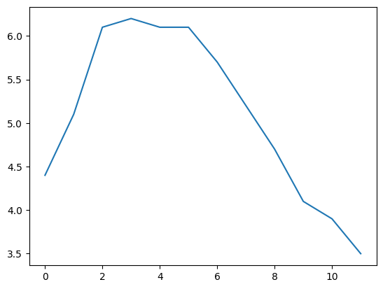
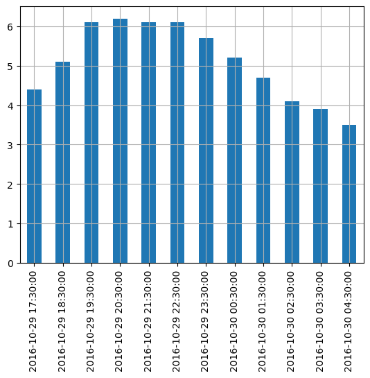
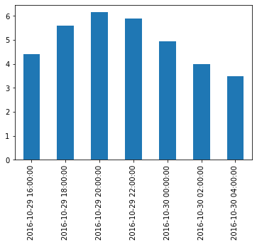
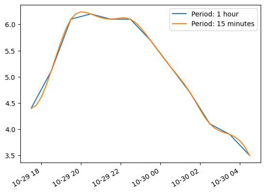
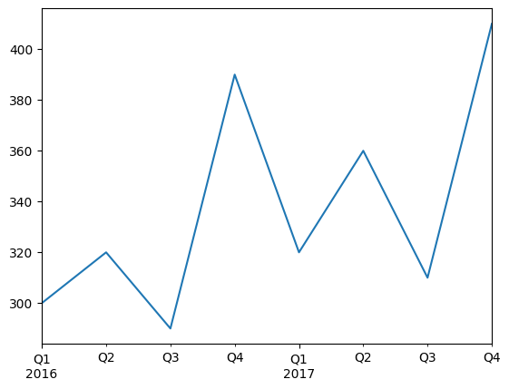
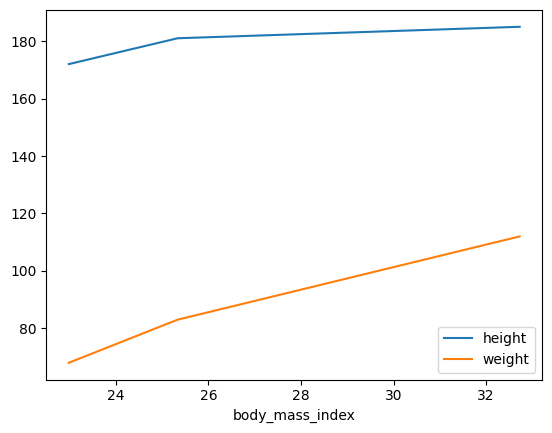
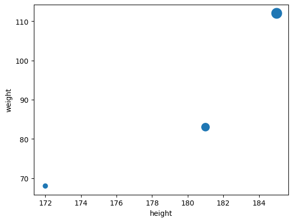

import pandas as pd도구 - 판다스(pandas)
pandas 라이브러리는 사용하기 쉬운 고성능 데이터 구조와 데이터 분석 도구를 제공합니다. 주 데이터 구조는 DataFrame입니다. 이를 인-메모리(in-memory) 2D 테이블로 생각할 수 있습니다(열 이름과 행 레이블이 있는 스프레드시트와 비슷합니다). 엑셀에 있는 많은 기능을 프로그램에서 사용할 수 있습니다. 여기에는 피봇 테이블이나 다른 열을 기반으로 열을 계산하고 그래프 출력하는 기능 등이 포함됩니다. 열 값으로 행을 그룹핑할 수도 있습니다. 또한 SQL과 비슷하게 테이블을 조인할 수 있습니다. 판다스는 시계열 데이터를 다루는데도 뛰어납니다.
필요 라이브러리:
- 넘파이(NumPy) – 넘파이에 익숙하지 않다면 지금 넘파이 튜토리얼을 둘러 보세요.
|
|
설정
먼저 pandas를 임포트합니다. 보통 pd로 임포트합니다:
Series 객체
pandas 라이브러리는 다음과 같은 유용한 데이터 구조를 포함하고 있습니다:
Series객체를 곧 이어서 설명하겠습니다.Series객체는 1D 배열입니다. (열 이름과 행 레이블을 가진) 스프레드시트의 열과 비슷합니다.DataFrame객체는 2D 테이블입니다. (열 이름과 행 레이블을 가진) 스프레드시트와 비슷합니다.
Series 만들기
첫 번째 Series 객체를 만들어 보죠!
s = pd.Series([2,-1,3,5])
s0 2
1 -1
2 3
3 5
dtype: int64s[1]-11D ndarray와 비슷합니다
Series 객체는 넘파이 ndarray와 비슷하게 동작합니다. 넘파이 함수에 매개변수로 종종 전달할 수 있습니다:
import numpy as np
np.exp(s) #거듭제곱0 7.389056
1 0.367879
2 20.085537
3 148.413159
dtype: float64np.square(s) #제곱0 4
1 1
2 9
3 25
dtype: int64Series 객체에 대한 산술 연산도 가능합니다. ndarray와 비슷하게 원소별로 적용됩니다:
s + [1000,2000,3000,4000]0 1002
1 1999
2 3003
3 4005
dtype: int64넘파이와 비슷하게 Series에 하나의 숫자를 더하면 Series에 있는 모든 원소에 더해집니다. 이를 브로드캐스팅(broadcasting)이라고 합니다:
s + 10000 1002
1 999
2 1003
3 1005
dtype: int64*나 / 같은 모든 이항 연산과 심지어 조건 연산에서도 마찬가지입니다:
s < 00 False
1 True
2 False
3 False
dtype: bool#불리언 값 이용하여 원하는 값 추출 가능
a = pd.Series([True, False, False, True])
s[a]0 2
3 5
dtype: int64s[s<0]1 -1
dtype: int64인덱스 레이블
Series 객체에 있는 각 원소는 인덱스 레이블(index label)이라 불리는 고유한 식별자를 가지고 있습니다. 기본적으로 Series에 있는 원소의 순서입니다(0에서 시작합니다). 하지만 수동으로 인덱스 레이블을 지정할 수도 있습니다:
s2 = pd.Series([68, 83, 112, 68], index=["alice", "bob", "charles", "darwin"])
s2alice 68
bob 83
charles 112
darwin 68
dtype: int64그다음 dict처럼 Series를 사용할 수 있습니다:
s2[s2>s2.mean()]bob 83
charles 112
dtype: int64s2["bob"]83일반 배열처럼 정수 인덱스를 사용하여 계속 원소에 접근할 수 있습니다:
s2[1]83레이블이나 정수를 사용해 접근할 때 명확하게 하기 위해 레이블은 loc 속성을 사용하고 정수는 iloc 속성을 사용하는 것이 좋습니다:
s2alice 68
bob 83
charles 112
darwin 68
dtype: int64s2.loc["alice"]68#iloc는 정수로 접근, loc는 label형태로 접근
s2.loc["bob"]83s2.iloc[1]83Series는 인덱스 레이블을 슬라이싱할 수도 있습니다:
s2alice 68
bob 83
charles 112
darwin 68
dtype: int64#iloc는 마지막 인덱스 포함 하지 않음 하지만 loc같은 경우는 마지막 인덱스 포함한 값 출력함
s2.iloc[1:3]bob 83
charles 112
dtype: int64#loc는 마지막 'darwin'의 값까지 포함해서 출력함
s2.loc['bob':'darwin']bob 83
charles 112
darwin 68
dtype: int64기본 정수 레이블을 사용할 때 예상 외의 결과를 만들 수 있기 때문에 주의해야 합니다:
surprise = pd.Series([1000, 1001, 1002, 1003])
surprise0 1000
1 1001
2 1002
3 1003
dtype: int64surprise_slice = surprise[2:]
surprise_slice2 1002
3 1003
dtype: int64보세요. 첫 번째 원소의 인덱스 레이블이 2입니다. 따라서 슬라이싱 결과에서 인덱스 레이블 0인 원소는 없습니다:
try:
surprise_slice[0]
except KeyError as e:
print("키 에러:", e)키 에러: 0하지만 iloc 속성을 사용해 정수 인덱스로 원소에 접근할 수 있습니다. Series 객체를 사용할 때 loc와 iloc를 사용하는 것이 좋은 이유입니다:
surprise_slice.iloc[0]1002surprise_slice.iloc[1]1003#원래의 값도 변경되어있음
surprise_slice[2] = 1004
surprise0 1000
1 1001
2 1004
3 1003
dtype: int64dict에서 초기화
dict에서 Series 객체를 만들 수 있습니다. 키는 인덱스 레이블로 사용됩니다:
weights = {"alice": 68, "bob": 83, "colin": 86, "darwin": 68}
s3 = pd.Series(weights)
s3alice 68
bob 83
colin 86
darwin 68
dtype: int64Series에 포함할 원소를 제어하고 index를 지정하여 명시적으로 순서를 결정할 수 있습니다:
s4 = pd.Series(weights, index = ["colin", "alice"])
s4colin 86
alice 68
dtype: int64자동 정렬
여러 개의 Series 객체를 다룰 때 pandas는 자동으로 인덱스 레이블에 따라 원소를 정렬합니다.
s2.valuesarray([ 68, 83, 112, 68], dtype=int64)print(s2.keys())
print(s3.keys())
s2 + s3Index(['alice', 'bob', 'charles', 'darwin'], dtype='object')
Index(['alice', 'bob', 'colin', 'darwin'], dtype='object')alice 136.0
bob 166.0
charles NaN
colin NaN
darwin 136.0
dtype: float64만들어진 Series는 s2와 s3의 인덱스 레이블의 합집합을 담고 있습니다. s2에 "colin"이 없고 s3에 "charles"가 없기 때문에 이 원소는 NaN 값을 가집니다(Not-a-Number는 누락이란 의미입니다).
자동 정렬은 구조가 다고 누락된 값이 있는 여러 데이터를 다룰 때 매우 편리합니다. 하지만 올바른 인덱스 레이블을 지정하는 것을 잊는다면 원치않는 결과를 얻을 수 있습니다:
s9 = pd.Series([100,200], index = ["sleepy","tired"])
s9sleepy 100
tired 200
dtype: int64s5 = pd.Series([1000,1000,1000,1000])
print("s2 =", s2.values)
print("s5 =", s5.values)
s2 + s5s2 = [ 68 83 112 68]
s5 = [1000 1000 1000 1000]alice NaN
bob NaN
charles NaN
darwin NaN
0 NaN
1 NaN
2 NaN
3 NaN
dtype: float64레이블이 하나도 맞지 않기 때문에 판다스가 이 Series를 정렬할 수 없습니다. 따라서 모두 NaN이 되었습니다.
스칼라로 초기화
스칼라와 인덱스 레이블의 리스트로 Series 객체를 초기화할 수도 있습니다: 모든 원소가 이 스칼라 값으로 설정됩니다.
#굳이 index라고 명시해주지 않아도 됨
meaning = pd.Series(42, ["life", "universe", "everything"])
meaninglife 42
universe 42
everything 42
dtype: int64Series 이름
Series는 name을 가질 수 있습니다:
s6 = pd.Series([83, 68], index=["bob", "alice"], name="weights")
s6bob 83
alice 68
Name: weights, dtype: int64Series 그래프 출력
맷플롯립을 사용해 Series 데이터를 쉽게 그래프로 출력할 수 있습니다(맷플롯립에 대한 자세한 설명은 맷플롯립 튜토리얼을 참고하세요). 맷플롯립을 임포트하고 plot() 메서드를 호출하면 끝입니다:
%matplotlib inline
import matplotlib.pyplot as plt
temperatures = [4.4,5.1,6.1,6.2,6.1,6.1,5.7,5.2,4.7,4.1,3.9,3.5]
s7 = pd.Series(temperatures, name="Temperature")
s7.plot()
plt.show()
데이터를 그래프로 출력하는데 많은 옵션이 있습니다. 여기에서 모두 나열할 필요는 없습니다. 특정 종류의 그래프(히스토그램, 파이 차트 등)가 필요하면 판다스 문서의 시각화 섹션에서 예제 코드를 참고하세요.
시간 다루기
많은 데이터셋에 타임스탬프가 포함되어 있습니다. 판다스는 이런 데이터를 다루는데 뛰어납니다: * (2016Q3 같은) 기간과 (“monthly” 같은) 빈도를 표현할 수 있습니다. * 기간을 실제 타임스탬프로 변환하거나 그 반대로 변환할 수 있습니다. * 데이터를 리샘플링하고 원하는 방식으로 값을 모을 수 있습니다. * 시간대를 다룰 수 있습니다.
시간 범위
먼저 pd.date_range()를 사용해 시계열을 만들어 보죠. 이 함수는 2016년 10월 29일 5:30pm에서 시작하여 12시간마다 하나의 datetime을 담고 있는 DatetimeIndex를 반환합니다.
#freq를 2H로 변경하면 두 시간 간격으로 저장 가능함 + periods는 생성할 시계열의 갯수를 의미함
dates = pd.date_range('2016/10/29 5:30pm', periods=12, freq='H')
datesDatetimeIndex(['2016-10-29 17:30:00', '2016-10-29 18:30:00',
'2016-10-29 19:30:00', '2016-10-29 20:30:00',
'2016-10-29 21:30:00', '2016-10-29 22:30:00',
'2016-10-29 23:30:00', '2016-10-30 00:30:00',
'2016-10-30 01:30:00', '2016-10-30 02:30:00',
'2016-10-30 03:30:00', '2016-10-30 04:30:00'],
dtype='datetime64[ns]', freq='H')pd.date_range('2013/12/25 5:10am', periods = 12, freq = '2H')DatetimeIndex(['2013-12-25 05:10:00', '2013-12-25 07:10:00',
'2013-12-25 09:10:00', '2013-12-25 11:10:00',
'2013-12-25 13:10:00', '2013-12-25 15:10:00',
'2013-12-25 17:10:00', '2013-12-25 19:10:00',
'2013-12-25 21:10:00', '2013-12-25 23:10:00',
'2013-12-26 01:10:00', '2013-12-26 03:10:00'],
dtype='datetime64[ns]', freq='2H')pd.date_range('2023/12/25 3:27am', periods = 12, freq = "H")DatetimeIndex(['2023-12-25 03:27:00', '2023-12-25 04:27:00',
'2023-12-25 05:27:00', '2023-12-25 06:27:00',
'2023-12-25 07:27:00', '2023-12-25 08:27:00',
'2023-12-25 09:27:00', '2023-12-25 10:27:00',
'2023-12-25 11:27:00', '2023-12-25 12:27:00',
'2023-12-25 13:27:00', '2023-12-25 14:27:00'],
dtype='datetime64[ns]', freq='H')이 DatetimeIndex를 Series의 인덱스로 사용할수 있습니다:
temp_series = pd.Series(temperatures, dates)
temp_series2016-10-29 17:30:00 4.4
2016-10-29 18:30:00 5.1
2016-10-29 19:30:00 6.1
2016-10-29 20:30:00 6.2
2016-10-29 21:30:00 6.1
2016-10-29 22:30:00 6.1
2016-10-29 23:30:00 5.7
2016-10-30 00:30:00 5.2
2016-10-30 01:30:00 4.7
2016-10-30 02:30:00 4.1
2016-10-30 03:30:00 3.9
2016-10-30 04:30:00 3.5
Freq: H, dtype: float64temp_series[1]5.1이 시리즈를 그래프로 출력해 보죠:
temp_series.plot(kind="bar")
plt.grid(True)
plt.show()
리샘플링
판다스는 매우 간단하게 시계열을 리샘플링할 수 있습니다. resample() 메서드를 호출하고 새로운 주기를 지정하면 됩니다:
temp_series_freq_2H = temp_series.resample("2H")
temp_series_freq_2H<pandas.core.resample.DatetimeIndexResampler object at 0x00000163C76E3BD0>temp_series_freq_3H = temp_series.resample("3H")
temp_series_freq_3H<pandas.core.resample.DatetimeIndexResampler object at 0x00000163C76531D0>temp_series_freq_3H.mean()2016-10-29 15:00:00 4.400000
2016-10-29 18:00:00 5.800000
2016-10-29 21:00:00 5.966667
2016-10-30 00:00:00 4.666667
2016-10-30 03:00:00 3.700000
Freq: 3H, dtype: float64리샘플링 연산은 사실 지연된 연산입니다. 그래서 Series 객체 대신 DatetimeIndexResampler 객체가 반환됩니다. 실제 리샘플링 연산을 수행하려면 mean() 같은 메서드를 호출할 수 있습니다. 이 메서드는 연속적인 시간 쌍에 대해 평균을 계산합니다:
temp_series_freq_2H = temp_series_freq_2H.mean()temp_series_freq_2H2016-10-29 16:00:00 4.40
2016-10-29 18:00:00 5.60
2016-10-29 20:00:00 6.15
2016-10-29 22:00:00 5.90
2016-10-30 00:00:00 4.95
2016-10-30 02:00:00 4.00
2016-10-30 04:00:00 3.50
Freq: 2H, dtype: float64결과를 그래프로 출력해 보죠:
temp_series_freq_2H.plot(kind="bar")
plt.show()
2시간 간격으로 어떻게 값이 수집되었는지 확인해 보세요. 예를 들어 6-8pm 간격을 보면 6:30pm에서 5.1이고 7:30pm에서 6.1입니다. 리샘플링 후에 5.1과 6.1의 평균인 5.6 하나를 얻었습니다. 평균말고 어떤 집계 함수(aggregation function)도 사용할 수 있습니다. 예를 들어 각 기간에서 최솟값을 찾을 수 있습니다:
temp_series_freq_2H2016-10-29 16:00:00 4.4
2016-10-29 18:00:00 5.1
2016-10-29 20:00:00 6.1
2016-10-29 22:00:00 5.7
2016-10-30 00:00:00 4.7
2016-10-30 02:00:00 3.9
2016-10-30 04:00:00 3.5
Freq: 2H, dtype: float64temp_series_freq_2H = temp_series.resample("2H").min()
temp_series_freq_2H2016-10-29 16:00:00 4.4
2016-10-29 18:00:00 5.1
2016-10-29 20:00:00 6.1
2016-10-29 22:00:00 5.7
2016-10-30 00:00:00 4.7
2016-10-30 02:00:00 3.9
2016-10-30 04:00:00 3.5
Freq: 2H, dtype: float64또는 동일한 효과를 내는 apply() 메서드를 사용할 수 있습니다:
a = temp_series.resample("2H").max()
a2016-10-29 16:00:00 4.4
2016-10-29 18:00:00 6.1
2016-10-29 20:00:00 6.2
2016-10-29 22:00:00 6.1
2016-10-30 00:00:00 5.2
2016-10-30 02:00:00 4.1
2016-10-30 04:00:00 3.5
Freq: 2H, dtype: float64temp_series_freq_2H = temp_series.resample("2H").apply(np.max)
temp_series_freq_2H2016-10-29 16:00:00 4.4
2016-10-29 18:00:00 6.1
2016-10-29 20:00:00 6.2
2016-10-29 22:00:00 6.1
2016-10-30 00:00:00 5.2
2016-10-30 02:00:00 4.1
2016-10-30 04:00:00 3.5
Freq: 2H, dtype: float64temp_series_freq_H = temp_series.resample("H").apply(np.max)
temp_series_freq_H2016-10-29 17:00:00 4.4
2016-10-29 18:00:00 5.1
2016-10-29 19:00:00 6.1
2016-10-29 20:00:00 6.2
2016-10-29 21:00:00 6.1
2016-10-29 22:00:00 6.1
2016-10-29 23:00:00 5.7
2016-10-30 00:00:00 5.2
2016-10-30 01:00:00 4.7
2016-10-30 02:00:00 4.1
2016-10-30 03:00:00 3.9
2016-10-30 04:00:00 3.5
Freq: H, dtype: float64업샘플링과 보간
다운샘플링의 예를 보았습니다. 하지만 업샘플링(즉, 빈도를 높입니다)도 할 수 있습니다. 하지만 데이터에 구멍을 만듭니다:
import numpy as np
temp_series.resample("15Min").apply(np.mean)2016-10-29 17:30:00 4.4
2016-10-29 17:45:00 NaN
2016-10-29 18:00:00 NaN
2016-10-29 18:15:00 NaN
2016-10-29 18:30:00 5.1
2016-10-29 18:45:00 NaN
2016-10-29 19:00:00 NaN
2016-10-29 19:15:00 NaN
2016-10-29 19:30:00 6.1
2016-10-29 19:45:00 NaN
2016-10-29 20:00:00 NaN
2016-10-29 20:15:00 NaN
2016-10-29 20:30:00 6.2
2016-10-29 20:45:00 NaN
2016-10-29 21:00:00 NaN
2016-10-29 21:15:00 NaN
2016-10-29 21:30:00 6.1
2016-10-29 21:45:00 NaN
2016-10-29 22:00:00 NaN
2016-10-29 22:15:00 NaN
2016-10-29 22:30:00 6.1
2016-10-29 22:45:00 NaN
2016-10-29 23:00:00 NaN
2016-10-29 23:15:00 NaN
2016-10-29 23:30:00 5.7
2016-10-29 23:45:00 NaN
2016-10-30 00:00:00 NaN
2016-10-30 00:15:00 NaN
2016-10-30 00:30:00 5.2
2016-10-30 00:45:00 NaN
2016-10-30 01:00:00 NaN
2016-10-30 01:15:00 NaN
2016-10-30 01:30:00 4.7
2016-10-30 01:45:00 NaN
2016-10-30 02:00:00 NaN
2016-10-30 02:15:00 NaN
2016-10-30 02:30:00 4.1
2016-10-30 02:45:00 NaN
2016-10-30 03:00:00 NaN
2016-10-30 03:15:00 NaN
2016-10-30 03:30:00 3.9
2016-10-30 03:45:00 NaN
2016-10-30 04:00:00 NaN
2016-10-30 04:15:00 NaN
2016-10-30 04:30:00 3.5
Freq: 15T, dtype: float64temp_series_freq_15min = temp_series.resample("15Min").mean()
temp_series_freq_15min.head(n=10) # `head`는 상위 n 개의 값만 출력합니다2016-10-29 17:30:00 4.4
2016-10-29 17:45:00 NaN
2016-10-29 18:00:00 NaN
2016-10-29 18:15:00 NaN
2016-10-29 18:30:00 5.1
2016-10-29 18:45:00 NaN
2016-10-29 19:00:00 NaN
2016-10-29 19:15:00 NaN
2016-10-29 19:30:00 6.1
2016-10-29 19:45:00 NaN
Freq: 15T, dtype: float64한가지 방법은 보간으로 사이를 채우는 것입니다. 이렇게 하려면 interpolate() 메서드를 호출합니다. 기본값은 선형 보간이지만 3차 보간(cubic interpolation) 같은 다른 방법을 선택할 수 있습니다:
#interpolate()안에 아무것도 작성하지 않으면 보간법 적용되지 않음
temp_series_45min = temp_series.resample("45min").interpolate()
temp_series_45min2016-10-29 17:15:00 NaN
2016-10-29 18:00:00 NaN
2016-10-29 18:45:00 NaN
2016-10-29 19:30:00 6.10
2016-10-29 20:15:00 6.10
2016-10-29 21:00:00 6.10
2016-10-29 21:45:00 6.10
2016-10-29 22:30:00 6.10
2016-10-29 23:15:00 5.75
2016-10-30 00:00:00 5.40
2016-10-30 00:45:00 5.05
2016-10-30 01:30:00 4.70
2016-10-30 02:15:00 4.40
2016-10-30 03:00:00 4.10
2016-10-30 03:45:00 3.80
2016-10-30 04:30:00 3.50
Freq: 45T, dtype: float64temp_series_freq_15min = temp_series.resample("15Min").interpolate(method="cubic")
temp_series_freq_15min.head(n=10)2016-10-29 17:30:00 4.400000
2016-10-29 17:45:00 4.452911
2016-10-29 18:00:00 4.605113
2016-10-29 18:15:00 4.829758
2016-10-29 18:30:00 5.100000
2016-10-29 18:45:00 5.388992
2016-10-29 19:00:00 5.669887
2016-10-29 19:15:00 5.915839
2016-10-29 19:30:00 6.100000
2016-10-29 19:45:00 6.203621
Freq: 15T, dtype: float64#업샘플링을 통해 그린 그래프가 더 부드러움
temp_series.plot(label="Period: 1 hour")
temp_series_freq_15min.plot(label="Period: 15 minutes")
plt.legend()
plt.show()
시간대
기본적으로 datetime은 단순합니다. 시간대(timezone)을 고려하지 않죠. 따라서 2016-10-30 02:30는 파리나 뉴욕이나 2016년 10월 30일 2:30pm입니다. tz_localize() 메서드로 시간대를 고려한 datetime을 만들 수 있습니다:
temp_series2016-10-29 17:30:00 4.4
2016-10-29 18:30:00 5.1
2016-10-29 19:30:00 6.1
2016-10-29 20:30:00 6.2
2016-10-29 21:30:00 6.1
2016-10-29 22:30:00 6.1
2016-10-29 23:30:00 5.7
2016-10-30 00:30:00 5.2
2016-10-30 01:30:00 4.7
2016-10-30 02:30:00 4.1
2016-10-30 03:30:00 3.9
2016-10-30 04:30:00 3.5
Freq: H, dtype: float64temp_series_ny = temp_series.tz_localize("America/New_York")
temp_series_ny2016-10-29 17:30:00-04:00 4.4
2016-10-29 18:30:00-04:00 5.1
2016-10-29 19:30:00-04:00 6.1
2016-10-29 20:30:00-04:00 6.2
2016-10-29 21:30:00-04:00 6.1
2016-10-29 22:30:00-04:00 6.1
2016-10-29 23:30:00-04:00 5.7
2016-10-30 00:30:00-04:00 5.2
2016-10-30 01:30:00-04:00 4.7
2016-10-30 02:30:00-04:00 4.1
2016-10-30 03:30:00-04:00 3.9
2016-10-30 04:30:00-04:00 3.5
dtype: float64모든 datetime에 -04:00이 추가됩니다. 즉 모든 시간은 UTC - 4시간을 의미합니다.
다음처럼 파리 시간대로 바꿀 수 있습니다:
temp_series_paris = temp_series_ny.tz_convert("Europe/Paris")
temp_series_paris2016-10-29 23:30:00+02:00 4.4
2016-10-30 00:30:00+02:00 5.1
2016-10-30 01:30:00+02:00 6.1
2016-10-30 02:30:00+02:00 6.2
2016-10-30 02:30:00+01:00 6.1
2016-10-30 03:30:00+01:00 6.1
2016-10-30 04:30:00+01:00 5.7
2016-10-30 05:30:00+01:00 5.2
2016-10-30 06:30:00+01:00 4.7
2016-10-30 07:30:00+01:00 4.1
2016-10-30 08:30:00+01:00 3.9
2016-10-30 09:30:00+01:00 3.5
dtype: float64temp_series_london = temp_series_ny.tz_convert("Europe/London")
temp_series_london.head(5)2016-10-29 22:30:00+01:00 4.4
2016-10-29 23:30:00+01:00 5.1
2016-10-30 00:30:00+01:00 6.1
2016-10-30 01:30:00+01:00 6.2
2016-10-30 01:30:00+00:00 6.1
dtype: float64UTC와의 차이가 +02:00에서 +01:00으로 바뀐 것을 알 수 있습니다. 이는 프랑스가 10월 30일 3am에 겨울 시간으로 바꾸기 때문입니다(2am으로 바뀝니다). 따라서 2:30am이 두 번 등장합니다! 시간대가 없는 표현으로 돌아가 보죠(시간대가 없이 지역 시간으로 매시간 로그를 기록하는 경우 이와 비슷할 것입니다):
#tz_localize(None) : 로컬 시간대를 사용하지 않고 일반적이 UTC시간대를 사용하겠다는 의미
temp_series_paris_naive = temp_series_paris.tz_localize(None)
temp_series_paris_naive2016-10-29 23:30:00 4.4
2016-10-30 00:30:00 5.1
2016-10-30 01:30:00 6.1
2016-10-30 02:30:00 6.2
2016-10-30 02:30:00 6.1
2016-10-30 03:30:00 6.1
2016-10-30 04:30:00 5.7
2016-10-30 05:30:00 5.2
2016-10-30 06:30:00 4.7
2016-10-30 07:30:00 4.1
2016-10-30 08:30:00 3.9
2016-10-30 09:30:00 3.5
dtype: float64이렇게 되면 02:30이 정말 애매합니다. 시간대가 없는 datetime을 파리 시간대로 바꿀 때 에러가 발생합니다:
try:
temp_series_paris_naive.tz_localize("Europe/Paris")
except Exception as e:
print(type(e))
print(e)<class 'pytz.exceptions.AmbiguousTimeError'>
Cannot infer dst time from 2016-10-30 02:30:00, try using the 'ambiguous' argument다행히 ambiguous 매개변수를 사용하면 판다스가 타임스탬프의 순서를 기반으로 적절한 DST(일광 절약 시간제)를 추측합니다:
#ambiguous = "infer"는 모호한 시간대를 알아서 pandas에서 처리해줌
temp_series_paris_naive.tz_localize("Europe/Paris", ambiguous="infer")2016-10-29 23:30:00+02:00 4.4
2016-10-30 00:30:00+02:00 5.1
2016-10-30 01:30:00+02:00 6.1
2016-10-30 02:30:00+02:00 6.2
2016-10-30 02:30:00+01:00 6.1
2016-10-30 03:30:00+01:00 6.1
2016-10-30 04:30:00+01:00 5.7
2016-10-30 05:30:00+01:00 5.2
2016-10-30 06:30:00+01:00 4.7
2016-10-30 07:30:00+01:00 4.1
2016-10-30 08:30:00+01:00 3.9
2016-10-30 09:30:00+01:00 3.5
dtype: float64기간
pd.period_range() 함수는 DatetimeIndex가 아니라 PeriodIndex를 반환합니다. 예를 들어 2016과 2017년의 전체 분기를 가져와 보죠:
#periods는 생성하고자 하는 매개변수의 개수를 의미
quarters = pd.period_range('2016Q1', periods=8, freq='Q')
quartersPeriodIndex(['2016Q1', '2016Q2', '2016Q3', '2016Q4', '2017Q1', '2017Q2',
'2017Q3', '2017Q4'],
dtype='period[Q-DEC]')PeriodIndex에 숫자 N을 추가하면 PeriodIndex 빈도의 N 배만큼 이동시킵니다:
quarters + 3PeriodIndex(['2016Q4', '2017Q1', '2017Q2', '2017Q3', '2017Q4', '2018Q1',
'2018Q2', '2018Q3'],
dtype='period[Q-DEC]')asfreq() 메서드를 사용하면 PeriodIndex의 빈도를 바꿀 수 있습니다. 모든 기간이 늘어나거나 줄어듭니다. 예를 들어 분기 기간을 모두 월별 기간으로 바꾸어 보죠:
#월별 기간
quarters.asfreq("M")PeriodIndex(['2016-03', '2016-06', '2016-09', '2016-12', '2017-03', '2017-06',
'2017-09', '2017-12'],
dtype='period[M]', freq='M')#일별 기간
quarters.asfreq("d")PeriodIndex(['2016-03-31', '2016-06-30', '2016-09-30', '2016-12-31',
'2017-03-31', '2017-06-30', '2017-09-30', '2017-12-31'],
dtype='period[D]')기본적으로 asfreq는 각 기간의 끝에 맞춥니다. 기간의 시작에 맞추도록 변경할 수 있습니다:
quarters.asfreq("M", how="start")PeriodIndex(['2016-01', '2016-04', '2016-07', '2016-10', '2017-01', '2017-04',
'2017-07', '2017-10'],
dtype='period[M]')quarters.asfreq("M")PeriodIndex(['2016-03', '2016-06', '2016-09', '2016-12', '2017-03', '2017-06',
'2017-09', '2017-12'],
dtype='period[M]')간격을 늘릴 수도 있습니다:
# "A"는 Anunual의 약자로 년도를 변경할 때 사용
quarters.asfreq("A")PeriodIndex(['2016', '2016', '2016', '2016', '2017', '2017', '2017', '2017'], dtype='period[A-DEC]')물론 PeriodIndex로 Series를 만들 수 있습니다:
quarterly_revenue = pd.Series([300, 320, 290, 390, 320, 360, 310, 410], index = quarters)
quarterly_revenue2016Q1 300
2016Q2 320
2016Q3 290
2016Q4 390
2017Q1 320
2017Q2 360
2017Q3 310
2017Q4 410
Freq: Q-DEC, dtype: int64from matplotlib import pyplot as plt
quarterly_revenue.plot(kind="line")
plt.show()
to_timestamp를 호출해서 기간을 타임스탬프로 변경할 수 있습니다. 기본적으로 기간의 첫 번째 날을 반환합니다. 하지만 how와 freq를 지정해서 기간의 마지막 시간을 얻을 수 있습니다:
#how를 start으로 변경
quarterly_revenue.to_timestamp( how="start",freq="H")2016-01-01 300
2016-04-01 320
2016-07-01 290
2016-10-01 390
2017-01-01 320
2017-04-01 360
2017-07-01 310
2017-10-01 410
Freq: QS-OCT, dtype: int64last_hours = quarterly_revenue.to_timestamp(how="end", freq="H")
last_hours2016-03-31 23:59:59.999999999 300
2016-06-30 23:59:59.999999999 320
2016-09-30 23:59:59.999999999 290
2016-12-31 23:59:59.999999999 390
2017-03-31 23:59:59.999999999 320
2017-06-30 23:59:59.999999999 360
2017-09-30 23:59:59.999999999 310
2017-12-31 23:59:59.999999999 410
dtype: int64to_peroid를 호출하면 다시 기간으로 돌아갑니다:
last_hours.to_period()2016Q1 300
2016Q2 320
2016Q3 290
2016Q4 390
2017Q1 320
2017Q2 360
2017Q3 310
2017Q4 410
Freq: Q-DEC, dtype: int64판다스는 여러 가지 시간 관련 함수를 많이 제공합니다. 온라인 문서를 확인해 보세요. 예를 하나 들면 2016년 매월 마지막 업무일의 9시를 얻는 방법은 다음과 같습니다:
#asfreq : how를 따로 지정해주지 않으면 how = "end"가 기본값으로 지정됨
#to_timestamp : how를 지정해주지 않으면 None으로 지정되기 때문에 변화가 없음
month_2023 = pd.period_range("2023", periods = 12, freq="M")
one_day_after_last = month_2023.asfreq("D") +1
one_day_after_last
last_day = one_day_after_last.to_timestamp() - pd.tseries.offsets.BDay()
last_day.to_period("H") + 9 #기본 시간값에 9를 더해서 9시로 만들어줌PeriodIndex(['2023-01-31 09:00', '2023-02-28 09:00', '2023-03-31 09:00',
'2023-04-28 09:00', '2023-05-31 09:00', '2023-06-30 09:00',
'2023-07-31 09:00', '2023-08-31 09:00', '2023-09-29 09:00',
'2023-10-31 09:00', '2023-11-30 09:00', '2023-12-29 09:00'],
dtype='period[H]')months_2016 = pd.period_range("2016", periods=12, freq="M")
one_day_after_last_days = months_2016.asfreq("D") + 1
#Bday는 Business day를 의미하며 휴일을 제외한 나머지 날짜를 말함
last_bdays = one_day_after_last_days.to_timestamp() - pd.tseries.offsets.BDay()
last_bdays.to_period("H") + 9PeriodIndex(['2016-01-29 09:00', '2016-02-29 09:00', '2016-03-31 09:00',
'2016-04-29 09:00', '2016-05-31 09:00', '2016-06-30 09:00',
'2016-07-29 09:00', '2016-08-31 09:00', '2016-09-30 09:00',
'2016-10-31 09:00', '2016-11-30 09:00', '2016-12-30 09:00'],
dtype='period[H]')DataFrame 객체
데이터프레임 객체는 스프레드시트를 표현합니다. 셀 값, 열 이름, 행 인덱스 레이블을 가집니다. 다른 열을 바탕으로 열을 계산하는 식을 쓸 수 있고 피봇 테이블을 만들고, 행을 그룹핑하고, 그래프를 그릴 수 있습니다. DataFrame을 Series의 딕셔너리로 볼 수 있습니다.
DataFrame 만들기
Series 객체의 딕셔너리를 전달하여 데이터프레임을 만들 수 있습니다:
people_dict = {
"weight": pd.Series([68, 83, 112], index=["alice", "bob", "charles"]),
"birthyear": pd.Series([1984, 1985, 1992], index=["bob", "alice", "charles"], name="year"),
"children": pd.Series([0, 3], index=["charles", "bob"]),
"hobby": pd.Series(["Biking", "Dancing"], index=["alice", "bob"]),
}
people = pd.DataFrame(people_dict)
people| weight | birthyear | children | hobby | |
|---|---|---|---|---|
| alice | 68 | 1985 | NaN | Biking |
| bob | 83 | 1984 | 3.0 | Dancing |
| charles | 112 | 1992 | 0.0 | NaN |
몇가지 알아 두어야 할 것은 다음과 같습니다:
Series는 인덱스를 기반으로 자동으로 정렬됩니다.- 누락된 값은
NaN으로 표현됩니다. Series이름은 무시됩니다("year"란 이름은 삭제됩니다).DataFrame은 주피터 노트북에서 멋지게 출력됩니다!
예상하는 방식으로 열을 참조할 수 있고 Serires 객체가 반환됩니다:
people["birthyear"]alice 1985
bob 1984
charles 1992
Name: birthyear, dtype: int64people.birthyearalice 1985
bob 1984
charles 1992
Name: birthyear, dtype: int64동시에 여러 개의 열을 선택할 수 있습니다:
people[["birthyear", "hobby"]]| birthyear | hobby | |
|---|---|---|
| alice | 1985 | Biking |
| bob | 1984 | Dancing |
| charles | 1992 | NaN |
people.iloc[:,[1,3]]| birthyear | hobby | |
|---|---|---|
| alice | 1985 | Biking |
| bob | 1984 | Dancing |
| charles | 1992 | NaN |
people.iloc[1,1]1984people.loc[['alice'],:]| weight | birthyear | children | hobby | |
|---|---|---|---|---|
| alice | 68 | 1985 | NaN | Biking |
people.loc[:,['birthyear']]| birthyear | |
|---|---|
| alice | 1985 |
| bob | 1984 |
| charles | 1992 |
Dataframe 반환
열 리스트나 행 인덱스 레이블을 DataFrame 생성자에 전달하면 해당 열과 행으로 채워진 데이터프레임이 반환됩니다. 예를 들면:
people| weight | birthyear | children | hobby | |
|---|---|---|---|---|
| alice | 68 | 1985 | NaN | Biking |
| bob | 83 | 1984 | 3.0 | Dancing |
| charles | 112 | 1992 | 0.0 | NaN |
d2 = pd.DataFrame(
people_dict,
columns=["birthyear", "weight", "height"],
index=["bob", "alice", "eugene"]
)
d2| birthyear | weight | height | |
|---|---|---|---|
| bob | 1984.0 | 83.0 | NaN |
| alice | 1985.0 | 68.0 | NaN |
| eugene | NaN | NaN | NaN |
DataFrame을 만드는 또 다른 편리한 방법은 ndarray나 리스트의 리스트로 모든 값을 생성자에게 전달하고 열 이름과 행 인덱스 레이블을 각기 지정하는 것입니다:
import numpy as npvalues = [
[1985, np.nan, "Biking", 68],
[1984, 3, "Dancing", 83],
[1992, 0, np.nan, 112]
]
d3 = pd.DataFrame(
values,
columns=["birthyear", "children", "hobby", "weight"],
index=["alice", "bob", "charles"]
)
d3| birthyear | children | hobby | weight | |
|---|---|---|---|---|
| alice | 1985 | NaN | Biking | 68 |
| bob | 1984 | 3.0 | Dancing | 83 |
| charles | 1992 | 0.0 | NaN | 112 |
누락된 값을 지정하려면 np.nan이나 넘파이 마스크 배열을 사용합니다:
masked_array = np.ma.asarray(values, dtype= object) #np.ma.asarray는 np.nan 그대로 유지함
masked_array[(0, 2), (1, 2)] = np.ma.masked
d3 = pd.DataFrame(
masked_array,
columns=["birthyear", "children", "hobby", "weight"],
index=["alice", "bob", "charles"]
)
d3| birthyear | children | hobby | weight | |
|---|---|---|---|---|
| alice | 1985 | NaN | Biking | 68 |
| bob | 1984 | 3 | Dancing | 83 |
| charles | 1992 | 0 | NaN | 112 |
import numpy as np
values = np.array([[1.0, np.nan, 3.0],
[4.0, 5.0, np.nan]])
# np.nan 값을 np.ma.masked로 변경
masked_array = np.ma.masked_array(values, np.isnan(values))ndarray 대신에 DataFrame 객체를 전달할 수도 있습니다:
d4 = pd.DataFrame(
d3,
columns=["hobby", "children"],
index=["alice", "bob"]
)
d4| hobby | children | |
|---|---|---|
| alice | Biking | NaN |
| bob | Dancing | 3 |
딕셔너리의 딕셔너리(또는 리스트의 리스트)로 DataFrame을 만들 수 있습니다:
people = pd.DataFrame({
"birthyear": {"alice":1985, "bob": 1984, "charles": 1992},
"hobby": {"alice":"Biking", "bob": "Dancing"},
"weight": {"alice":68, "bob": 83, "charles": 112},
"children": {"bob": 3, "charles": 0}
})
people| birthyear | hobby | weight | children | |
|---|---|---|---|---|
| alice | 1985 | Biking | 68 | NaN |
| bob | 1984 | Dancing | 83 | 3.0 |
| charles | 1992 | NaN | 112 | 0.0 |
멀티 인덱싱
모든 열이 같은 크기의 튜플이면 멀티 인덱스로 인식합니다. 열 인덱스 레이블에도 같은 방식이 적용됩니다. 예를 들면:
d5 = pd.DataFrame(
{
("public", "birthyear"):
{("Paris","alice"):1985, ("Paris","bob"): 1984, ("London","charles"): 1992},
("public", "hobby"):
{("Paris","alice"):"Biking", ("Paris","bob"): "Dancing"},
("private", "weight"):
{("Paris","alice"):68, ("Paris","bob"): 83, ("London","charles"): 112},
("private", "children"):
{("Paris", "alice"):np.nan, ("Paris","bob"): 3, ("London","charles"): 0}
}
)
d5| public | private | ||||
|---|---|---|---|---|---|
| birthyear | hobby | weight | children | ||
| Paris | alice | 1985 | Biking | 68 | NaN |
| bob | 1984 | Dancing | 83 | 3.0 | |
| London | charles | 1992 | NaN | 112 | 0.0 |
이제 "public" 열을 모두 담은 DataFrame을 손쉽게 만들 수 있습니다:
d5["public"] # d5.public과 같음| birthyear | hobby | ||
|---|---|---|---|
| Paris | alice | 1985 | Biking |
| bob | 1984 | Dancing | |
| London | charles | 1992 | NaN |
d5["public", "hobby"] # d5["public"]["hobby"]와 같습니다.Paris alice Biking
bob Dancing
London charles NaN
Name: (public, hobby), dtype: objectd5['public']['birthyear']Paris alice 1985
bob 1984
London charles 1992
Name: birthyear, dtype: int64d5["public"]['hobby']Paris alice Biking
bob Dancing
London charles NaN
Name: hobby, dtype: object레벨 낮추기
d5를 다시 확인해 보죠:
d5| public | private | ||||
|---|---|---|---|---|---|
| birthyear | hobby | weight | children | ||
| Paris | alice | 1985 | Biking | 68 | NaN |
| bob | 1984 | Dancing | 83 | 3.0 | |
| London | charles | 1992 | NaN | 112 | 0.0 |
열의 레벨(level)이 2개이고 인덱스 레벨이 2개입니다. droplevel()을 사용해 열 레벨을 낮출 수 있습니다(인덱스도 마찬가지입니다):
d5.columns = d5.columns.droplevel(level = 0)
d5| birthyear | hobby | weight | children | ||
|---|---|---|---|---|---|
| Paris | alice | 1985 | Biking | 68 | NaN |
| bob | 1984 | Dancing | 83 | 3.0 | |
| London | charles | 1992 | NaN | 112 | 0.0 |
#index도 위와 같이 drop가능
d6 = d5.copy()
d6.index = d6.droplevel(level=0)
d6| birthyear | hobby | weight | children | |
|---|---|---|---|---|
| (1985, Biking, 68, nan) | 1985 | Biking | 68 | NaN |
| (1984, Dancing, 83, 3.0) | 1984 | Dancing | 83 | 3.0 |
| (1992, nan, 112, 0.0) | 1992 | NaN | 112 | 0.0 |
전치
T 속성을 사용해 열과 인덱스를 바꿀 수 있습니다:
d6 = d5.T
d6| Paris | London | ||
|---|---|---|---|
| alice | bob | charles | |
| birthyear | 1985 | 1984 | 1992 |
| hobby | Biking | Dancing | NaN |
| weight | 68 | 83 | 112 |
| children | NaN | 3.0 | 0.0 |
레벨 스택과 언스택
stack() 메서드는 가장 낮은 열 레벨을 가장 낮은 인덱스 뒤에 추가합니다:
d6| Paris | London | ||
|---|---|---|---|
| alice | bob | charles | |
| birthyear | 1985 | 1984 | 1992 |
| hobby | Biking | Dancing | NaN |
| weight | 68 | 83 | 112 |
| children | NaN | 3.0 | 0.0 |
#열을 행의 인덱스로 변환하는 것(alice, bob, charles가 열에서 행으로 변환됨)
d7 = d6.stack()
d7| London | Paris | ||
|---|---|---|---|
| birthyear | alice | NaN | 1985 |
| bob | NaN | 1984 | |
| charles | 1992 | NaN | |
| hobby | alice | NaN | Biking |
| bob | NaN | Dancing | |
| weight | alice | NaN | 68 |
| bob | NaN | 83 | |
| charles | 112 | NaN | |
| children | bob | NaN | 3.0 |
| charles | 0.0 | NaN |
NaN 값이 생겼습니다. 이전에 없던 조합이 생겼기 때문입니다(예를 들어 London에 bob이 없었습니다).
unstack()을 호출하면 반대가 됩니다. 여기에서도 많은 NaN 값이 생성됩니다.
#행의 인덱스 레벨을 열로 변환하는 것
#행으로 변했던 이름이 열로 이동함
d8 = d7.unstack()
d8| London | Paris | |||||
|---|---|---|---|---|---|---|
| alice | bob | charles | alice | bob | charles | |
| birthyear | NaN | NaN | 1992 | 1985 | 1984 | NaN |
| children | NaN | NaN | 0.0 | NaN | 3.0 | NaN |
| hobby | NaN | NaN | NaN | Biking | Dancing | NaN |
| weight | NaN | NaN | 112 | 68 | 83 | NaN |
unstack을 다시 호출하면 Series 객체가 만들어 집니다:
d9 = d8.unstack()
d9London alice birthyear NaN
children NaN
hobby NaN
weight NaN
bob birthyear NaN
children NaN
hobby NaN
weight NaN
charles birthyear 1992
children 0.0
hobby NaN
weight 112
Paris alice birthyear 1985
children NaN
hobby Biking
weight 68
bob birthyear 1984
children 3.0
hobby Dancing
weight 83
charles birthyear NaN
children NaN
hobby NaN
weight NaN
dtype: objectstack()과 unstack() 메서드를 사용할 때 스택/언스택할 level을 선택할 수 있습니다. 심지어 한 번에 여러 개의 레벨을 스택/언스택할 수도 있습니다:
d9.unstack(level=0)| London | Paris | ||
|---|---|---|---|
| alice | birthyear | NaN | 1985 |
| children | NaN | NaN | |
| hobby | NaN | Biking | |
| weight | NaN | 68 | |
| bob | birthyear | NaN | 1984 |
| children | NaN | 3.0 | |
| hobby | NaN | Dancing | |
| weight | NaN | 83 | |
| charles | birthyear | 1992 | NaN |
| children | 0.0 | NaN | |
| hobby | NaN | NaN | |
| weight | 112 | NaN |
d10 = d9.unstack(level = (0,1))
d10| London | Paris | |||||
|---|---|---|---|---|---|---|
| alice | bob | charles | alice | bob | charles | |
| birthyear | NaN | NaN | 1992 | 1985 | 1984 | NaN |
| children | NaN | NaN | 0.0 | NaN | 3.0 | NaN |
| hobby | NaN | NaN | NaN | Biking | Dancing | NaN |
| weight | NaN | NaN | 112 | 68 | 83 | NaN |
대부분의 메서드는 수정된 복사본을 반환합니다
눈치챘겠지만 stack()과 unstack() 메서드는 객체를 수정하지 않습니다. 대신 복사본을 만들어 반환합니다. 판다스에 있는 대부분의 메서드들이 이렇게 동작합니다.
Pivot
import pandas._testing as tm
def unpivot(frame):
N, K = frame.shape
data = {
"value": frame.to_numpy().ravel("F"), #ravel : 다차원 배열 1차원 배열로 만듦
"variable": np.asarray(frame.columns).repeat(N), #N번 반복
"date": np.tile(np.asarray(frame.index), K), #k번 반복해서 새로운 배열 생성
}
return pd.DataFrame(data, columns=["date", "variable", "value"])
df = unpivot(tm.makeTimeDataFrame(3))
df| date | variable | value | |
|---|---|---|---|
| 0 | 2000-01-03 | A | 1.284506 |
| 1 | 2000-01-04 | A | -0.347140 |
| 2 | 2000-01-05 | A | 1.337726 |
| 3 | 2000-01-03 | B | -0.286219 |
| 4 | 2000-01-04 | B | 0.817838 |
| 5 | 2000-01-05 | B | -2.090122 |
| 6 | 2000-01-03 | C | 0.733344 |
| 7 | 2000-01-04 | C | 0.657007 |
| 8 | 2000-01-05 | C | -0.040598 |
| 9 | 2000-01-03 | D | 1.882573 |
| 10 | 2000-01-04 | D | 2.839784 |
| 11 | 2000-01-05 | D | -0.526889 |
filtered = df[df["variable"] == "A"]
filtered| date | variable | value | |
|---|---|---|---|
| 0 | 2000-01-03 | A | 1.284506 |
| 1 | 2000-01-04 | A | -0.347140 |
| 2 | 2000-01-05 | A | 1.337726 |
#pivot은 중복되는 값 사용하지 않고 기본적으로 마지막 값을 사용함 + 만약 중복되는 값 중 평균을 사용하고 싶다면 아래 코드 "value" 뒤에 aggfunc = "mean"을 넣어서 사용 가능
pivoted = df.pivot(index = "date", columns = "variable", values = "value")
pivoted| variable | A | B | C | D |
|---|---|---|---|---|
| date | ||||
| 2000-01-03 | 1.284506 | -0.286219 | 0.733344 | 1.882573 |
| 2000-01-04 | -0.347140 | 0.817838 | 0.657007 | 2.839784 |
| 2000-01-05 | 1.337726 | -2.090122 | -0.040598 | -0.526889 |
pivoted["A"]date
2000-01-03 1.811220
2000-01-04 0.569411
2000-01-05 0.494455
Name: A, dtype: float64pivoted.columnsIndex(['A', 'B', 'C', 'D'], dtype='object', name='variable')pivoted.indexDatetimeIndex(['2000-01-03', '2000-01-04', '2000-01-05'], dtype='datetime64[ns]', name='date', freq=None)#index,column값 지정해주지 않으면 값이 여러 개 나옴
df["value2"] = df["value"] * 2
df| date | variable | value | value2 | |
|---|---|---|---|---|
| typing.Literal[<no_default>] | ||||
| 0 | 2000-01-03 | A | 1.284506 | 2.569011 |
| 1 | 2000-01-04 | A | -0.347140 | -0.694280 |
| 2 | 2000-01-05 | A | 1.337726 | 2.675451 |
| 3 | 2000-01-03 | B | -0.286219 | -0.572439 |
| 4 | 2000-01-04 | B | 0.817838 | 1.635676 |
| 5 | 2000-01-05 | B | -2.090122 | -4.180244 |
| 6 | 2000-01-03 | C | 0.733344 | 1.466688 |
| 7 | 2000-01-04 | C | 0.657007 | 1.314013 |
| 8 | 2000-01-05 | C | -0.040598 | -0.081196 |
| 9 | 2000-01-03 | D | 1.882573 | 3.765146 |
| 10 | 2000-01-04 | D | 2.839784 | 5.679567 |
| 11 | 2000-01-05 | D | -0.526889 | -1.053778 |
df.columnsIndex(['date', 'variable', 'value', 'value2'], dtype='object')#pivot은 재구조화해주는 함수로 행과열을 재배치해 새로운 구조 생성
pivoted = df.pivot(index="date", columns="variable")
pivoted| value | value2 | |||||||
|---|---|---|---|---|---|---|---|---|
| variable | A | B | C | D | A | B | C | D |
| date | ||||||||
| 2000-01-03 | 1.284506 | -0.286219 | 0.733344 | 1.882573 | 2.569011 | -0.572439 | 1.466688 | 3.765146 |
| 2000-01-04 | -0.347140 | 0.817838 | 0.657007 | 2.839784 | -0.694280 | 1.635676 | 1.314013 | 5.679567 |
| 2000-01-05 | 1.337726 | -2.090122 | -0.040598 | -0.526889 | 2.675451 | -4.180244 | -0.081196 | -1.053778 |
pivoted["value2"]| variable | A | B | C | D |
|---|---|---|---|---|
| date | ||||
| 2000-01-03 | 3.622440 | 1.795095 | -1.311077 | -0.527870 |
| 2000-01-04 | 1.138821 | 1.489595 | 0.081361 | -1.805730 |
| 2000-01-05 | 0.988910 | 0.624462 | 1.174982 | 4.289959 |
pivoted.columnsMultiIndex([( 'value', 'A'),
( 'value', 'B'),
( 'value', 'C'),
( 'value', 'D'),
('value2', 'A'),
('value2', 'B'),
('value2', 'C'),
('value2', 'D')],
names=[None, 'variable'])행 참조하기
people DataFrame으로 돌아가 보죠:
people| weight | birthyear | children | hobby | |
|---|---|---|---|---|
| alice | 68 | 1985 | NaN | Biking |
| bob | 83 | 1984 | 3.0 | Dancing |
| charles | 112 | 1992 | 0.0 | NaN |
loc 속성으로 열 대신 행을 참조할 수 있습니다. DataFrame의 열 이름이 행 인덱스 레이블로 매핑된 Series 객체가 반환됩니다:
people.loc[:,['birthyear']]| birthyear | |
|---|---|
| alice | 1985 |
| bob | 1984 |
| charles | 1992 |
people['birthyear']alice 1985
bob 1984
charles 1992
Name: birthyear, dtype: int64people.loc[:,'birthyear']alice 1985
bob 1984
charles 1992
Name: birthyear, dtype: int64people.loc["charles"]birthyear 1992
hobby NaN
weight 112
children 0
Name: charles, dtype: objectpeople.iloc[2]weight 112
birthyear 1992
children 0.0
hobby NaN
Name: charles, dtype: objectiloc 속성을 사용해 정수 인덱스로 행을 참조할 수 있습니다:
people.iloc[2]birthyear 1992
hobby NaN
weight 112
children 0
Name: charles, dtype: object행을 슬라이싱할 수 있으며 DataFrame 객체가 반환됩니다:
people.iloc[1:3]| birthyear | hobby | weight | children | |
|---|---|---|---|---|
| bob | 1984 | Dancing | 83 | 3.0 |
| charles | 1992 | NaN | 112 | 0.0 |
마자믹으로 불리언 배열을 전달하여 해당하는 행을 가져올 수 있습니다:
people[np.array([True, False, True])]| birthyear | hobby | weight | children | |
|---|---|---|---|---|
| alice | 1985 | Biking | 68 | NaN |
| charles | 1992 | NaN | 112 | 0.0 |
불리언 표현식을 사용할 때 아주 유용합니다:
people[people["birthyear"] < 1990]| weight | birthyear | children | hobby | |
|---|---|---|---|---|
| alice | 68 | 1985 | NaN | Biking |
| bob | 83 | 1984 | 3.0 | Dancing |
열 추가, 삭제
DataFrame을 Series의 딕셔너리처럼 다룰 수 있습니다. 따라서 다음 같이 쓸 수 있습니다:
people| birthyear | hobby | weight | children | |
|---|---|---|---|---|
| alice | 1985 | Biking | 68 | NaN |
| bob | 1984 | Dancing | 83 | 3.0 |
| charles | 1992 | NaN | 112 | 0.0 |
people["age"] = 2018 - people["birthyear"] # "age" 열을 추가합니다
people["over 30"] = people["age"] > 30 # "over 30" 열을 추가합니다
birthyears = people.pop("birthyear") #people에서 birthyear만 추출한 값이 birthyears에 저장됨
del people["children"]
people| hobby | weight | age | over 30 | |
|---|---|---|---|---|
| alice | Biking | 68 | 33 | True |
| bob | Dancing | 83 | 34 | True |
| charles | NaN | 112 | 26 | False |
birthyearsalice 1985
bob 1984
charles 1992
Name: birthyear, dtype: int64새로운 열을 추가할 때 행의 개수는 같아야 합니다. 누락된 행은 NaN으로 채워지고 추가적인 행은 무시됩니다:
people["pets"] = pd.Series({"bob": 0, "charles": 5, "eugene":1}) # alice 누락됨, eugene은 무시됨
people| hobby | weight | children | age | over 30 | pets | |
|---|---|---|---|---|---|---|
| alice | Biking | 68 | NaN | 33 | True | NaN |
| bob | Dancing | 83 | 3.0 | 34 | True | 0.0 |
| charles | NaN | 112 | 0.0 | 26 | False | 5.0 |
새로운 열을 추가할 때 기본적으로 (오른쪽) 끝에 추가됩니다. insert() 메서드를 사용해 다른 곳에 열을 추가할 수 있습니다:
people.insert(1, "height", [172, 181, 185])
people| weight | height | hobby | age | over 30 | pets | |
|---|---|---|---|---|---|---|
| alice | 68 | 172 | Biking | 33 | True | NaN |
| bob | 83 | 181 | Dancing | 34 | True | 0.0 |
| charles | 112 | 185 | NaN | 26 | False | 5.0 |
새로운 열 할당하기
assign() 메서드를 호출하여 새로운 열을 만들 수도 있습니다. 이는 새로운 DataFrame 객체를 반환하며 원본 객체는 변경되지 않습니다:
#assign 사용 x
people.assign(
body_mass_index = people["weight"] / (people["height"] / 100) ** 2,
has_pets = people["pets"] > 0
)| weight | height | hobby | age | over 30 | pets | body_mass_index | has_pets | |
|---|---|---|---|---|---|---|---|---|
| alice | 68 | 172 | Biking | 33 | True | NaN | 22.985398 | False |
| bob | 83 | 181 | Dancing | 34 | True | 0.0 | 25.335002 | False |
| charles | 112 | 185 | NaN | 26 | False | 5.0 | 32.724617 | True |
할당문 안에서 만든 열은 접근할 수 없습니다:
try:
people.assign(
body_mass_index = people["weight"] / (people["height"] / 100) ** 2,
overweight = people["body_mass_index"] > 25
)
except KeyError as e:
print("키 에러:", e)키 에러: 'body_mass_index'해결책은 두 개의 연속된 할당문으로 나누는 것입니다:
d6 = people.assign(body_mass_index = people["weight"] / (people["height"] / 100) ** 2)
d6.assign(overweight = d6["body_mass_index"] > 25)| weight | height | hobby | age | over 30 | pets | body_mass_index | overweight | |
|---|---|---|---|---|---|---|---|---|
| alice | 68 | 172 | Biking | 33 | True | NaN | 22.985398 | False |
| bob | 83 | 181 | Dancing | 34 | True | 0.0 | 25.335002 | True |
| charles | 112 | 185 | NaN | 26 | False | 5.0 | 32.724617 | True |
임시 변수 d6를 만들면 불편합니다. assign() 메서드를 연결하고 싶겠지만 people 객체가 첫 번째 할당문에서 실제로 수정되지 않기 때문에 작동하지 않습니다:
try:
(people
.assign(body_mass_index = people["weight"] / (people["height"] / 100) ** 2)
.assign(overweight = people["body_mass_index"] > 25)
)
except KeyError as e:
print("키 에러:", e)키 에러: 'body_mass_index'하지만 걱정하지 마세요. 간단한 방법이 있습니다. assign() 메서드에 함수(전형적으로 lambda 함수)를 전달하면 DataFrame을 매개변수로 이 함수를 호출할 것입니다:
(people
.assign(body_mass_index = lambda df: df["weight"] / (df["height"] / 100) ** 2)
.assign(overweight = lambda df: df["body_mass_index"] > 25)
)| hobby | height | weight | age | over 30 | pets | body_mass_index | overweight | |
|---|---|---|---|---|---|---|---|---|
| alice | Biking | 172 | 68 | 33 | True | NaN | 22.985398 | False |
| bob | Dancing | 181 | 83 | 34 | True | 0.0 | 25.335002 | True |
| charles | NaN | 185 | 112 | 26 | False | 5.0 | 32.724617 | True |
문제가 해결되었군요!
표현식 평가
판다스가 제공하는 뛰어난 기능 하나는 표현식 평가입니다. 이는 numexpr 라이브러리에 의존하기 때문에 설치가 되어 있어야 합니다.
people| weight | height | hobby | age | over 30 | pets | |
|---|---|---|---|---|---|---|
| alice | 68 | 172 | Biking | 33 | True | NaN |
| bob | 83 | 181 | Dancing | 34 | True | 0.0 |
| charles | 112 | 185 | NaN | 26 | False | 5.0 |
#eval은 해당 데이터 계산 편리하게 해줌(inplace = TRUE는 해당 데이터 수정가능하게 하는것 기본값은 FALSE임)
people.eval("weight / (height/100) ** 2 > 25")alice False
bob True
charles True
dtype: bool할당 표현식도 지원됩니다. inplace=True로 지정하면 수정된 복사본을 만들지 않고 바로 DataFrame을 변경합니다:
people.eval("body_mass_index = weight / (height/100) ** 2", inplace=True)
people| weight | height | hobby | age | over 30 | pets | body_mass_index | |
|---|---|---|---|---|---|---|---|
| alice | 68 | 172 | Biking | 33 | True | NaN | 22.985398 |
| bob | 83 | 181 | Dancing | 34 | True | 0.0 | 25.335002 |
| charles | 112 | 185 | NaN | 26 | False | 5.0 | 32.724617 |
'@'를 접두어로 사용하여 지역 변수나 전역 변수를 참조할 수 있습니다:
overweight_threshold = 30
people.eval("overweight = body_mass_index > @overweight_threshold", inplace=True)
people| weight | height | hobby | age | over 30 | pets | body_mass_index | overweight | |
|---|---|---|---|---|---|---|---|---|
| alice | 68 | 172 | Biking | 33 | True | NaN | 22.985398 | False |
| bob | 83 | 181 | Dancing | 34 | True | 0.0 | 25.335002 | False |
| charles | 112 | 185 | NaN | 26 | False | 5.0 | 32.724617 | True |
DataFrame 쿼리하기
query() 메서드를 사용하면 쿼리 표현식에 기반하여 DataFrame을 필터링할 수 있습니다:
people.query("age > 30 and pets == 0")| weight | height | hobby | age | over 30 | pets | |
|---|---|---|---|---|---|---|
| bob | 83 | 181 | Dancing | 34 | True | 0.0 |
아래의 방법이 더 자주 사용됨
people[(people["age"]>30) & (people["pets"]==0)]| weight | height | hobby | age | over 30 | pets | |
|---|---|---|---|---|---|---|
| bob | 83 | 181 | Dancing | 34 | True | 0.0 |
mask = people[(people["age"]>30) & (people["pets"]==0)]
mask| hobby | weight | children | age | over 30 | pets | |
|---|---|---|---|---|---|---|
| bob | Dancing | 83 | 3.0 | 34 | True | 0.0 |
DataFrame 정렬
sort_index 메서드를 호출하여 DataFrame을 정렬할 수 있습니다. 기본적으로 인덱스 레이블을 기준으로 오름차순으로 행을 정렬합니다. 여기에서는 내림차순으로 정렬해 보죠:
#df.sort_values(by='나이', ascending=True) : 특정열을 기준으로 정렬하고 싶을 때
people.sort_index(ascending=False)| hobby | height | weight | age | over 30 | pets | body_mass_index | overweight | |
|---|---|---|---|---|---|---|---|---|
| charles | NaN | 185 | 112 | 26 | False | 5.0 | 32.724617 | True |
| bob | Dancing | 181 | 83 | 34 | True | 0.0 | 25.335002 | False |
| alice | Biking | 172 | 68 | 33 | True | NaN | 22.985398 | False |
sort_index는 DataFrame의 정렬된 복사본을 반환합니다. people을 직접 수정하려면 inplace 매개변수를 True로 지정합니다. 또한 axis=1로 지정하여 열 대신 행을 정렬할 수 있습니다:
#inplace는 원본 데이터를 직접적으로 변경할 것이냐를 결정하는 것
people.sort_index(axis=1, inplace=True)
people| age | body_mass_index | height | hobby | over 30 | overweight | pets | weight | |
|---|---|---|---|---|---|---|---|---|
| alice | 33 | 22.985398 | 172 | Biking | True | False | NaN | 68 |
| bob | 34 | 25.335002 | 181 | Dancing | True | False | 0.0 | 83 |
| charles | 26 | 32.724617 | 185 | NaN | False | True | 5.0 | 112 |
레이블이 아니라 값을 기준으로 DataFrame을 정렬하려면 sort_values에 정렬하려는 열을 지정합니다:
people.sort_values(by="age", inplace=True)
people| age | body_mass_index | height | hobby | over 30 | overweight | pets | weight | |
|---|---|---|---|---|---|---|---|---|
| charles | 26 | 32.724617 | 185 | NaN | False | True | 5.0 | 112 |
| alice | 33 | 22.985398 | 172 | Biking | True | False | NaN | 68 |
| bob | 34 | 25.335002 | 181 | Dancing | True | False | 0.0 | 83 |
DataFrame 그래프 그리기
Series와 마찬가지로 판다스는 DataFrame 기반으로 멋진 그래프를 손쉽게 그릴 수 있습니다.
예를 들어 plot 메서드를 호출하여 DataFrame의 데이터에서 선 그래프를 쉽게 그릴 수 있습니다:
people.plot(kind = "line", x = "body_mass_index", y = ["height", "weight"])
plt.show()
맷플롯립의 함수가 지원하는 다른 매개변수를 사용할 수 있습니다. 예를 들어, 산점도를 그릴 때 맷플롯립의 scatter() 함수의 s 매개변수를 사용해 크기를 지정할 수 있습니다:
people.plot(kind = "scatter", x = "height", y = "weight", s=[40, 120, 200])
plt.show()
선택할 수 있는 옵션이 많습니다. 판다스 문서의 시각화 페이지에서 마음에 드는 그래프를 찾아 예제 코드를 살펴 보세요.
DataFrame 연산
DataFrame이 넘파이 배열을 흉내내려는 것은 아니지만 몇 가지 비슷한 점이 있습니다. 예제 DataFrame을 만들어 보죠:
grades_array = np.array([[8,8,9],[10,9,9],[4, 8, 2], [9, 10, 10]])
grades = pd.DataFrame(grades_array, columns=["sep", "oct", "nov"], index=["alice","bob","charles","darwin"])
grades| sep | oct | nov | |
|---|---|---|---|
| alice | 8 | 8 | 9 |
| bob | 10 | 9 | 9 |
| charles | 4 | 8 | 2 |
| darwin | 9 | 10 | 10 |
DataFrame에 넘파이 수학 함수를 적용하면 모든 값에 이 함수가 적용됩니다:
np.sqrt(grades)| sep | oct | nov | |
|---|---|---|---|
| alice | 2.828427 | 2.828427 | 3.000000 |
| bob | 3.162278 | 3.000000 | 3.000000 |
| charles | 2.000000 | 2.828427 | 1.414214 |
| darwin | 3.000000 | 3.162278 | 3.162278 |
비슷하게 DataFrame에 하나의 값을 더하면 DataFrame의 모든 원소에 이 값이 더해집니다. 이를 브로드캐스팅이라고 합니다:
grades + 1| sep | oct | nov | |
|---|---|---|---|
| alice | 9 | 9 | 10 |
| bob | 11 | 10 | 10 |
| charles | 5 | 9 | 3 |
| darwin | 10 | 11 | 11 |
물론 산술 연산(*,/,**…)과 조건 연산(>, ==…)을 포함해 모든 이항 연산에도 마찬가지 입니다:
grades >= 5| sep | oct | nov | |
|---|---|---|---|
| alice | True | True | True |
| bob | True | True | True |
| charles | False | True | False |
| darwin | True | True | True |
grades[grades >= 5]| sep | oct | nov | |
|---|---|---|---|
| alice | 8.0 | 8 | 9.0 |
| bob | 10.0 | 9 | 9.0 |
| charles | NaN | 8 | NaN |
| darwin | 9.0 | 10 | 10.0 |
DataFrame의 max, sum, mean 같은 집계 연산은 각 열에 적용되어 Series 객체가 반환됩니다:
grades.mean()sep 7.75
oct 8.75
nov 7.50
dtype: float64all 메서드도 집계 연산입니다: 모든 값이 True인지 아닌지 확인합니다. 모든 학생의 점수가 5 이상인 월을 찾아 보죠:
#grades데이터 안에 모든 점수가 5이상인 월 추출
(grades > 5).all()sep False
oct True
nov False
dtype: boolMost of these functions take an optional axis parameter which lets you specify along which axis of the DataFrame you want the operation executed. The default is axis=0, meaning that the operation is executed vertically (on each column). You can set axis=1 to execute the operation horizontally (on each row). For example, let’s find out which students had all grades greater than 5:
(grades > 5).all(axis = 1)alice True
bob True
charles False
darwin True
dtype: boolany 메서드는 하나라도 참이면 True를 반환합니다. 한 번이라도 10점을 받은 사람을 찾아 보죠:
#grades데이터 안에서 하나라도 10 이상이면 True값 출력
(grades == 10).any(axis = 1)alice False
bob True
charles False
darwin True
dtype: boolDataFrame에 Series 객체를 더하면 (또는 다른 이항 연산을 수행하면) 판다스는 DataFrame에 있는 모든 행에 이 연산을 브로드캐스팅합니다. 이는 Series 객체가 DataFrame의 행의 개수와 크기가 같을 때만 동작합니다. 예를 들어 DataFrame의 mean(Series 객체)을 빼보죠:
grades - grades.mean() # grades - [7.75, 8.75, 7.50] 와 동일| sep | oct | nov | |
|---|---|---|---|
| alice | 0.25 | -0.75 | 1.5 |
| bob | 2.25 | 0.25 | 1.5 |
| charles | -3.75 | -0.75 | -5.5 |
| darwin | 1.25 | 1.25 | 2.5 |
모든 9월 성적에서 7.75를 빼고, 10월 성적에서 8.75를 빼고, 11월 성적에서 7.50을 뺍니다. 이는 다음 DataFrame을 빼는 것과 같습니다:
#데이터프레임 생성할 때 열을 기준으로 같은 값이 생성됨
pd.DataFrame([[7.75, 8.75, 7.50]]*4, index=grades.index, columns=grades.columns)| sep | oct | nov | |
|---|---|---|---|
| alice | 7.75 | 8.75 | 7.5 |
| bob | 7.75 | 8.75 | 7.5 |
| charles | 7.75 | 8.75 | 7.5 |
| darwin | 7.75 | 8.75 | 7.5 |
모든 성적의 전체 평균을 빼고 싶다면 다음과 같은 방법을 사용합니다:
grades.valuesarray([[ 8, 8, 9],
[10, 9, 9],
[ 4, 8, 2],
[ 9, 10, 10]])grades - grades.values.mean() # 모든 점수에서 전체 평균(8.00)을 뺍니다| sep | oct | nov | |
|---|---|---|---|
| alice | 0.0 | 0.0 | 1.0 |
| bob | 2.0 | 1.0 | 1.0 |
| charles | -4.0 | 0.0 | -6.0 |
| darwin | 1.0 | 2.0 | 2.0 |
자동 정렬
Series와 비슷하게 여러 개의 DataFrame에 대한 연산을 수행하면 판다스는 자동으로 행 인덱스 레이블로 정렬하지만 열 이름으로도 정렬할 수 있습니다. 10월부터 12월까지 보너스 포인트를 담은 DataFrame을 만들어 보겠습니다:
bonus_array = np.array([[0,np.nan,2],[np.nan,1,0],[0, 1, 0], [3, 3, 0]])
bonus_points = pd.DataFrame(bonus_array, columns=["oct", "nov", "dec"], index=["bob","colin", "darwin", "charles"])
bonus_points| oct | nov | dec | |
|---|---|---|---|
| bob | 0.0 | NaN | 2.0 |
| colin | NaN | 1.0 | 0.0 |
| darwin | 0.0 | 1.0 | 0.0 |
| charles | 3.0 | 3.0 | 0.0 |
grades + bonus_points| dec | nov | oct | sep | |
|---|---|---|---|---|
| alice | NaN | NaN | NaN | NaN |
| bob | NaN | NaN | 9.0 | NaN |
| charles | NaN | 5.0 | 11.0 | NaN |
| colin | NaN | NaN | NaN | NaN |
| darwin | NaN | 11.0 | 10.0 | NaN |
덧셈 연산이 수행되었지만 너무 많은 원소가 NaN이 되었습니다. DataFrame을 정렬할 때 일부 열과 행이 한 쪽에만 있기 때문입니다. 다른 쪽에는 누란되었다고 간주합니다(NaN). NaN에 어떤 수를 더하면 NaN이 됩니다.
누락된 데이터 다루기
실제 데이터에서 누락된 데이터를 다루는 경우는 자주 발생합니다. 판다스는 누락된 데이터를 다룰 수 있는 몇 가지 방법을 제공합니다.
위 데이터에 있는 문제를 해결해 보죠. 예를 들어, 누락된 데이터는 NaN이 아니라 0이 되어야 한다고 결정할 수 있습니다. fillna() 메서드를 사용해 모든 NaN 값을 어떤 값으로 바꿀 수 있습니다:
#fillna() : 괄호 안 숫자로 NA값 채워줌
(grades + bonus_points).fillna(0)| dec | nov | oct | sep | |
|---|---|---|---|---|
| alice | 0.0 | 0.0 | 0.0 | 0.0 |
| bob | 0.0 | 0.0 | 9.0 | 0.0 |
| charles | 0.0 | 5.0 | 11.0 | 0.0 |
| colin | 0.0 | 0.0 | 0.0 | 0.0 |
| darwin | 0.0 | 11.0 | 10.0 | 0.0 |
9월의 점수를 0으로 만드는 것은 공정하지 않습니다. 누락된 점수는 그대로 두고, 누락된 보너스 포인트는 0으로 바꿀 수 있습니다:
fixed_bonus_points = bonus_points.fillna(0)
fixed_bonus_points.insert(0, "sep", 0)
fixed_bonus_points.loc["alice"] = 0 #alice에 해당하는 모든 열의 값이 0으로 반환됨
grades + fixed_bonus_points| dec | nov | oct | sep | |
|---|---|---|---|---|
| alice | NaN | 9.0 | 8.0 | 8.0 |
| bob | NaN | 9.0 | 9.0 | 10.0 |
| charles | NaN | 5.0 | 11.0 | 4.0 |
| colin | NaN | NaN | NaN | NaN |
| darwin | NaN | 11.0 | 10.0 | 9.0 |
훨씬 낫네요: 일부 데이터를 꾸며냈지만 덜 불공정합니다.
누락된 값을 다루는 또 다른 방법은 보간입니다. bonus_points DataFrame을 다시 보죠:
bonus_points| oct | nov | dec | |
|---|---|---|---|
| bob | 0.0 | NaN | 2.0 |
| colin | NaN | 1.0 | 0.0 |
| darwin | 0.0 | 1.0 | 0.0 |
| charles | 3.0 | 3.0 | 0.0 |
interpolate 메서드를 사용해 보죠. 기본적으로 수직 방향(axis=0)으로 보간합니다. 따라서 수평으로(axis=1)으로 보간하도록 지정합니다.
#bonus_points.iloc[1].interplolate
#행을 기준으로 앞뒤에 있는 값으로 보간해줌
bonus_points.interpolate(axis=1)| oct | nov | dec | |
|---|---|---|---|
| bob | 0.0 | 1.0 | 2.0 |
| colin | NaN | 1.0 | 0.0 |
| darwin | 0.0 | 1.0 | 0.0 |
| charles | 3.0 | 3.0 | 0.0 |
bob의 보너스 포인트는 10월에 0이고 12월에 2입니다. 11월을 보간하면 평균 보너스 포인트 1을 얻습니다. colin의 보너스 포인트는 11월에 1이지만 9월에 포인트는 얼마인지 모릅니다. 따라서 보간할 수 없고 10월의 포인트는 그대로 누락된 값으로 남아 있습니다. 이를 해결하려면 보간하기 전에 9월의 보너스 포인트를 0으로 설정해야 합니다.
better_bonus_points = bonus_points.copy()
better_bonus_points.insert(0, "sep", 0)
better_bonus_points.loc["alice"] = 0
better_bonus_points = better_bonus_points.interpolate(axis=1)
better_bonus_points| sep | oct | nov | dec | |
|---|---|---|---|---|
| bob | 0.0 | 0.0 | 1.0 | 2.0 |
| colin | 0.0 | 0.5 | 1.0 | 0.0 |
| darwin | 0.0 | 0.0 | 1.0 | 0.0 |
| charles | 0.0 | 3.0 | 3.0 | 0.0 |
| alice | 0.0 | 0.0 | 0.0 | 0.0 |
좋습니다. 이제 모든 보너스 포인트가 합리적으로 보간되었습니다. 최종 점수를 확인해 보죠:
grades + better_bonus_points| dec | nov | oct | sep | |
|---|---|---|---|---|
| alice | NaN | 9.0 | 8.0 | 8.0 |
| bob | NaN | 10.0 | 9.0 | 10.0 |
| charles | NaN | 5.0 | 11.0 | 4.0 |
| colin | NaN | NaN | NaN | NaN |
| darwin | NaN | 11.0 | 10.0 | 9.0 |
9월 열이 오른쪽에 추가되었는데 좀 이상합니다. 이는 더하려는 DataFrame이 정확히 같은 열을 가지고 있지 않기 때문입니다(grade DataFrame에는 "dec" 열이 없습니다). 따라서 판다스는 알파벳 순서로 최종 열을 정렬합니다. 이를 해결하려면 덧셈을 하기 전에 누락된 열을 추가하면 됩니다:
grades["dec"] = np.nan
final_grades = grades + better_bonus_points
final_grades| sep | oct | nov | dec | |
|---|---|---|---|---|
| alice | 8.0 | 8.0 | 9.0 | NaN |
| bob | 10.0 | 9.0 | 10.0 | NaN |
| charles | 4.0 | 11.0 | 5.0 | NaN |
| colin | NaN | NaN | NaN | NaN |
| darwin | 9.0 | 10.0 | 11.0 | NaN |
12월과 colin에 대해 할 수 있는 것이 많지 않습니다. 보너스 포인트를 만드는 것이 나쁘지만 점수를 합리적으로 올릴 수는 없습니다(어떤 선생님들은 그럴 수 있지만). dropna() 메서드를 사용해 모두 NaN인 행을 삭제합니다:
final_grades_clean = final_grades.dropna(how="all")
final_grades_clean| sep | oct | nov | dec | |
|---|---|---|---|---|
| alice | 8.0 | 8.0 | 9.0 | NaN |
| bob | 10.0 | 9.0 | 10.0 | NaN |
| charles | 4.0 | 11.0 | 5.0 | NaN |
| darwin | 9.0 | 10.0 | 11.0 | NaN |
그다음 axis 매개변수를 1로 지정하여 모두 NaN인 열을 삭제합니다:
final_grades_clean = final_grades_clean.dropna(axis=1, how="all")
final_grades_clean| sep | oct | nov | |
|---|---|---|---|
| alice | 8.0 | 8.0 | 9.0 |
| bob | 10.0 | 9.0 | 10.0 |
| charles | 4.0 | 11.0 | 5.0 |
| darwin | 9.0 | 10.0 | 11.0 |
groupby로 집계하기
SQL과 비슷하게 판다스는 데이터를 그룹핑하고 각 그룹에 대해 연산을 수행할 수 있습니다.
먼저 그루핑을 위해 각 사람의 데이터를 추가로 만들겠습니다. NaN 값을 어떻게 다루는지 보기 위해 final_grades DataFrame을 다시 사용하겠습니다:
final_grades["hobby"] = ["Biking", "Dancing", np.nan, "Dancing", "Biking"]
final_grades| sep | oct | nov | dec | hobby | |
|---|---|---|---|---|---|
| alice | 8.0 | 8.0 | 9.0 | NaN | Biking |
| bob | 10.0 | 9.0 | 10.0 | NaN | Dancing |
| charles | 4.0 | 11.0 | 5.0 | NaN | NaN |
| colin | NaN | NaN | NaN | NaN | Dancing |
| darwin | 9.0 | 10.0 | 11.0 | NaN | Biking |
hobby로 이 DataFrame을 그룹핑해 보죠:
grouped_grades = final_grades.groupby("hobby")
grouped_grades<pandas.core.groupby.generic.DataFrameGroupBy object at 0x00000225778FC810>이제 hobby마다 평균 점수를 계산할 수 있습니다:
grouped_grades.mean()| sep | oct | nov | dec | |
|---|---|---|---|---|
| hobby | ||||
| Biking | 8.5 | 9.0 | 10.0 | NaN |
| Dancing | 10.0 | 9.0 | 10.0 | NaN |
아주 쉽네요! 평균을 계산할 때 NaN 값은 그냥 무시됩니다.
피봇 테이블
판다스는 스프레드시트와 비슷하 피봇 테이블을 지원하여 데이터를 빠르게 요약할 수 있습니다. 어떻게 동작하는 알아 보기 위해 간단한 DataFrame을 만들어 보죠:
bonus_points| oct | nov | dec | |
|---|---|---|---|
| bob | 0.0 | NaN | 2.0 |
| colin | NaN | 1.0 | 0.0 |
| darwin | 0.0 | 1.0 | 0.0 |
| charles | 3.0 | 3.0 | 0.0 |
final_grades_clean| sep | oct | nov | |
|---|---|---|---|
| alice | 8.0 | 8.0 | 9.0 |
| bob | 10.0 | 9.0 | 10.0 |
| charles | 4.0 | 11.0 | 5.0 |
| darwin | 9.0 | 10.0 | 11.0 |
#각 행의 해당하는 행으로 새롭게 들어감
final_grades_clean.stack()alice sep 8.0
oct 8.0
nov 9.0
bob sep 10.0
oct 9.0
nov 10.0
charles sep 4.0
oct 11.0
nov 5.0
darwin sep 9.0
oct 10.0
nov 11.0
dtype: float64final_grades_clean.stack().reset_index()| level_0 | level_1 | 0 | |
|---|---|---|---|
| 0 | alice | sep | 8.0 |
| 1 | alice | oct | 8.0 |
| 2 | alice | nov | 9.0 |
| 3 | bob | sep | 10.0 |
| 4 | bob | oct | 9.0 |
| 5 | bob | nov | 10.0 |
| 6 | charles | sep | 4.0 |
| 7 | charles | oct | 11.0 |
| 8 | charles | nov | 5.0 |
| 9 | darwin | sep | 9.0 |
| 10 | darwin | oct | 10.0 |
| 11 | darwin | nov | 11.0 |
more_grades = final_grades_clean.stack().reset_index()
more_grades.columns = ["name", "month", "grade"]
more_grades["bonus"] = [np.nan, np.nan, np.nan, 0, np.nan, 2, 3, 3, 0, 0, 1, 0]
more_grades| name | month | grade | bonus | |
|---|---|---|---|---|
| 0 | alice | sep | 8.0 | NaN |
| 1 | alice | oct | 8.0 | NaN |
| 2 | alice | nov | 9.0 | NaN |
| 3 | bob | sep | 10.0 | 0.0 |
| 4 | bob | oct | 9.0 | NaN |
| 5 | bob | nov | 10.0 | 2.0 |
| 6 | charles | sep | 4.0 | 3.0 |
| 7 | charles | oct | 11.0 | 3.0 |
| 8 | charles | nov | 5.0 | 0.0 |
| 9 | darwin | sep | 9.0 | 0.0 |
| 10 | darwin | oct | 10.0 | 1.0 |
| 11 | darwin | nov | 11.0 | 0.0 |
이제 이 DataFrame에 대해 pd.pivot_table() 함수를 호출하고 name 열로 그룹핑합니다. 기본적으로 pivot_table()은 수치 열의 평균을 계산합니다:
#values 정해주지 않으면 에러 발생함
pd.pivot_table(more_grades, index="name", values=['bonus','grade'])| bonus | grade | |
|---|---|---|
| name | ||
| alice | NaN | 8.333333 |
| bob | 1.000000 | 9.666667 |
| charles | 2.000000 | 6.666667 |
| darwin | 0.333333 | 10.000000 |
집계 함수를 aggfunc 매개변수로 바꿀 수 있습니다. 또한 집계 대상의 열을 리스트로 지정할 수 있습니다:
pd.pivot_table(more_grades, index="name", values=["grade","bonus"], aggfunc=np.max) #aggfunc는 피봇테이블에서만 사용| bonus | grade | |
|---|---|---|
| name | ||
| alice | NaN | 9.0 |
| bob | 2.0 | 10.0 |
| charles | 3.0 | 11.0 |
| darwin | 1.0 | 11.0 |
columns 매개변수를 지정하여 수평으로 집계할 수 있고 margins=True로 설정해 각 행과 열에 대해 전체 합을 계산할 수 있습니다:
pd.pivot_table(more_grades, index="name", values="grade", columns="month", margins=True)| month | nov | oct | sep | All |
|---|---|---|---|---|
| name | ||||
| alice | 9.00 | 8.0 | 8.00 | 8.333333 |
| bob | 10.00 | 9.0 | 10.00 | 9.666667 |
| charles | 5.00 | 11.0 | 4.00 | 6.666667 |
| darwin | 11.00 | 10.0 | 9.00 | 10.000000 |
| All | 8.75 | 9.5 | 7.75 | 8.666667 |
마지막으로 여러 개의 인덱스나 열 이름을 지정하면 판다스가 다중 레벨 인덱스를 만듭니다:
#pivot_table안에서 index는 group_by 역할 수행
pd.pivot_table(more_grades, index=("name", "month"), margins=True)| bonus | grade | ||
|---|---|---|---|
| name | month | ||
| alice | nov | NaN | 9.00 |
| oct | NaN | 8.00 | |
| sep | NaN | 8.00 | |
| bob | nov | 2.000 | 10.00 |
| oct | NaN | 9.00 | |
| sep | 0.000 | 10.00 | |
| charles | nov | 0.000 | 5.00 |
| oct | 3.000 | 11.00 | |
| sep | 3.000 | 4.00 | |
| darwin | nov | 0.000 | 11.00 |
| oct | 1.000 | 10.00 | |
| sep | 0.000 | 9.00 | |
| All | 1.125 | 8.75 |
함수
큰 DataFrame을 다룰 때 내용을 간단히 요약하는 것이 도움이 됩니다. 판다스는 이를 위한 몇 가지 함수를 제공합니다. 먼저 수치 값, 누락된 값, 텍스트 값이 섞인 큰 DataFrame을 만들어 보죠. 주피터 노트북은 이 DataFrame의 일부만 보여줍니다:
#fromfunction : 사용자 정의 함수 불러옴
much_data = np.fromfunction(lambda x,y: (x+y*y)%17*11, (10000, 26))
large_df = pd.DataFrame(much_data, columns=list("ABCDEFGHIJKLMNOPQRSTUVWXYZ"))
large_df[large_df % 16 == 0] = np.nan
large_df.insert(3,"some_text", "Blabla")
large_df| A | B | C | some_text | D | E | F | G | H | I | ... | Q | R | S | T | U | V | W | X | Y | Z | |
|---|---|---|---|---|---|---|---|---|---|---|---|---|---|---|---|---|---|---|---|---|---|
| 0 | NaN | 11.0 | 44.0 | Blabla | 99.0 | NaN | 88.0 | 22.0 | 165.0 | 143.0 | ... | 11.0 | NaN | 11.0 | 44.0 | 99.0 | NaN | 88.0 | 22.0 | 165.0 | 143.0 |
| 1 | 11.0 | 22.0 | 55.0 | Blabla | 110.0 | NaN | 99.0 | 33.0 | NaN | 154.0 | ... | 22.0 | 11.0 | 22.0 | 55.0 | 110.0 | NaN | 99.0 | 33.0 | NaN | 154.0 |
| 2 | 22.0 | 33.0 | 66.0 | Blabla | 121.0 | 11.0 | 110.0 | 44.0 | NaN | 165.0 | ... | 33.0 | 22.0 | 33.0 | 66.0 | 121.0 | 11.0 | 110.0 | 44.0 | NaN | 165.0 |
| 3 | 33.0 | 44.0 | 77.0 | Blabla | 132.0 | 22.0 | 121.0 | 55.0 | 11.0 | NaN | ... | 44.0 | 33.0 | 44.0 | 77.0 | 132.0 | 22.0 | 121.0 | 55.0 | 11.0 | NaN |
| 4 | 44.0 | 55.0 | 88.0 | Blabla | 143.0 | 33.0 | 132.0 | 66.0 | 22.0 | NaN | ... | 55.0 | 44.0 | 55.0 | 88.0 | 143.0 | 33.0 | 132.0 | 66.0 | 22.0 | NaN |
| ... | ... | ... | ... | ... | ... | ... | ... | ... | ... | ... | ... | ... | ... | ... | ... | ... | ... | ... | ... | ... | ... |
| 9995 | NaN | NaN | 33.0 | Blabla | 88.0 | 165.0 | 77.0 | 11.0 | 154.0 | 132.0 | ... | NaN | NaN | NaN | 33.0 | 88.0 | 165.0 | 77.0 | 11.0 | 154.0 | 132.0 |
| 9996 | NaN | 11.0 | 44.0 | Blabla | 99.0 | NaN | 88.0 | 22.0 | 165.0 | 143.0 | ... | 11.0 | NaN | 11.0 | 44.0 | 99.0 | NaN | 88.0 | 22.0 | 165.0 | 143.0 |
| 9997 | 11.0 | 22.0 | 55.0 | Blabla | 110.0 | NaN | 99.0 | 33.0 | NaN | 154.0 | ... | 22.0 | 11.0 | 22.0 | 55.0 | 110.0 | NaN | 99.0 | 33.0 | NaN | 154.0 |
| 9998 | 22.0 | 33.0 | 66.0 | Blabla | 121.0 | 11.0 | 110.0 | 44.0 | NaN | 165.0 | ... | 33.0 | 22.0 | 33.0 | 66.0 | 121.0 | 11.0 | 110.0 | 44.0 | NaN | 165.0 |
| 9999 | 33.0 | 44.0 | 77.0 | Blabla | 132.0 | 22.0 | 121.0 | 55.0 | 11.0 | NaN | ... | 44.0 | 33.0 | 44.0 | 77.0 | 132.0 | 22.0 | 121.0 | 55.0 | 11.0 | NaN |
10000 rows × 27 columns
head() 메서드는 처음 5개 행을 반환합니다:
large_df.head()| A | B | C | some_text | D | E | F | G | H | I | ... | Q | R | S | T | U | V | W | X | Y | Z | |
|---|---|---|---|---|---|---|---|---|---|---|---|---|---|---|---|---|---|---|---|---|---|
| 0 | NaN | 11.0 | 44.0 | Blabla | 99.0 | NaN | 88.0 | 22.0 | 165.0 | 143.0 | ... | 11.0 | NaN | 11.0 | 44.0 | 99.0 | NaN | 88.0 | 22.0 | 165.0 | 143.0 |
| 1 | 11.0 | 22.0 | 55.0 | Blabla | 110.0 | NaN | 99.0 | 33.0 | NaN | 154.0 | ... | 22.0 | 11.0 | 22.0 | 55.0 | 110.0 | NaN | 99.0 | 33.0 | NaN | 154.0 |
| 2 | 22.0 | 33.0 | 66.0 | Blabla | 121.0 | 11.0 | 110.0 | 44.0 | NaN | 165.0 | ... | 33.0 | 22.0 | 33.0 | 66.0 | 121.0 | 11.0 | 110.0 | 44.0 | NaN | 165.0 |
| 3 | 33.0 | 44.0 | 77.0 | Blabla | 132.0 | 22.0 | 121.0 | 55.0 | 11.0 | NaN | ... | 44.0 | 33.0 | 44.0 | 77.0 | 132.0 | 22.0 | 121.0 | 55.0 | 11.0 | NaN |
| 4 | 44.0 | 55.0 | 88.0 | Blabla | 143.0 | 33.0 | 132.0 | 66.0 | 22.0 | NaN | ... | 55.0 | 44.0 | 55.0 | 88.0 | 143.0 | 33.0 | 132.0 | 66.0 | 22.0 | NaN |
5 rows × 27 columns
마지막 5개 행을 반환하는 tail() 함수도 있습니다. 원하는 행 개수를 전달할 수도 있습니다:
large_df.tail(n=2)| A | B | C | some_text | D | E | F | G | H | I | ... | Q | R | S | T | U | V | W | X | Y | Z | |
|---|---|---|---|---|---|---|---|---|---|---|---|---|---|---|---|---|---|---|---|---|---|
| 9998 | 22.0 | 33.0 | 66.0 | Blabla | 121.0 | 11.0 | 110.0 | 44.0 | NaN | 165.0 | ... | 33.0 | 22.0 | 33.0 | 66.0 | 121.0 | 11.0 | 110.0 | 44.0 | NaN | 165.0 |
| 9999 | 33.0 | 44.0 | 77.0 | Blabla | 132.0 | 22.0 | 121.0 | 55.0 | 11.0 | NaN | ... | 44.0 | 33.0 | 44.0 | 77.0 | 132.0 | 22.0 | 121.0 | 55.0 | 11.0 | NaN |
2 rows × 27 columns
info() 메서드는 각 열의 내용을 요약하여 출력합니다:
large_df.info()<class 'pandas.core.frame.DataFrame'>
RangeIndex: 10000 entries, 0 to 9999
Data columns (total 27 columns):
# Column Non-Null Count Dtype
--- ------ -------------- -----
0 A 8823 non-null float64
1 B 8824 non-null float64
2 C 8824 non-null float64
3 some_text 10000 non-null object
4 D 8824 non-null float64
5 E 8822 non-null float64
6 F 8824 non-null float64
7 G 8824 non-null float64
8 H 8822 non-null float64
9 I 8823 non-null float64
10 J 8823 non-null float64
11 K 8822 non-null float64
12 L 8824 non-null float64
13 M 8824 non-null float64
14 N 8822 non-null float64
15 O 8824 non-null float64
16 P 8824 non-null float64
17 Q 8824 non-null float64
18 R 8823 non-null float64
19 S 8824 non-null float64
20 T 8824 non-null float64
21 U 8824 non-null float64
22 V 8822 non-null float64
23 W 8824 non-null float64
24 X 8824 non-null float64
25 Y 8822 non-null float64
26 Z 8823 non-null float64
dtypes: float64(26), object(1)
memory usage: 2.1+ MB마지막으로 describe() 메서드는 각 열에 대한 주요 집계 연산을 수행한 결과를 보여줍니다:
Finally, the describe() method gives a nice overview of the main aggregated values over each column: * count: null(NaN)이 아닌 값의 개수 * mean: null이 아닌 값의 평균 * std: null이 아닌 값의 표준 편차 * min: null이 아닌 값의 최솟값 * 25%, 50%, 75%: null이 아닌 값의 25번째, 50번째, 75번째 백분위수 * max: null이 아닌 값의 최댓값
large_df.describe()| A | B | C | D | E | F | G | H | I | J | ... | Q | R | S | T | U | V | W | X | Y | Z | |
|---|---|---|---|---|---|---|---|---|---|---|---|---|---|---|---|---|---|---|---|---|---|
| count | 8823.000000 | 8824.000000 | 8824.000000 | 8824.000000 | 8822.000000 | 8824.000000 | 8824.000000 | 8822.000000 | 8823.000000 | 8823.000000 | ... | 8824.000000 | 8823.000000 | 8824.000000 | 8824.000000 | 8824.000000 | 8822.000000 | 8824.000000 | 8824.000000 | 8822.000000 | 8823.000000 |
| mean | 87.977559 | 87.972575 | 87.987534 | 88.012466 | 87.983791 | 88.007480 | 87.977561 | 88.000000 | 88.022441 | 88.022441 | ... | 87.972575 | 87.977559 | 87.972575 | 87.987534 | 88.012466 | 87.983791 | 88.007480 | 87.977561 | 88.000000 | 88.022441 |
| std | 47.535911 | 47.535523 | 47.521679 | 47.521679 | 47.535001 | 47.519371 | 47.529755 | 47.536879 | 47.535911 | 47.535911 | ... | 47.535523 | 47.535911 | 47.535523 | 47.521679 | 47.521679 | 47.535001 | 47.519371 | 47.529755 | 47.536879 | 47.535911 |
| min | 11.000000 | 11.000000 | 11.000000 | 11.000000 | 11.000000 | 11.000000 | 11.000000 | 11.000000 | 11.000000 | 11.000000 | ... | 11.000000 | 11.000000 | 11.000000 | 11.000000 | 11.000000 | 11.000000 | 11.000000 | 11.000000 | 11.000000 | 11.000000 |
| 25% | 44.000000 | 44.000000 | 44.000000 | 44.000000 | 44.000000 | 44.000000 | 44.000000 | 44.000000 | 44.000000 | 44.000000 | ... | 44.000000 | 44.000000 | 44.000000 | 44.000000 | 44.000000 | 44.000000 | 44.000000 | 44.000000 | 44.000000 | 44.000000 |
| 50% | 88.000000 | 88.000000 | 88.000000 | 88.000000 | 88.000000 | 88.000000 | 88.000000 | 88.000000 | 88.000000 | 88.000000 | ... | 88.000000 | 88.000000 | 88.000000 | 88.000000 | 88.000000 | 88.000000 | 88.000000 | 88.000000 | 88.000000 | 88.000000 |
| 75% | 132.000000 | 132.000000 | 132.000000 | 132.000000 | 132.000000 | 132.000000 | 132.000000 | 132.000000 | 132.000000 | 132.000000 | ... | 132.000000 | 132.000000 | 132.000000 | 132.000000 | 132.000000 | 132.000000 | 132.000000 | 132.000000 | 132.000000 | 132.000000 |
| max | 165.000000 | 165.000000 | 165.000000 | 165.000000 | 165.000000 | 165.000000 | 165.000000 | 165.000000 | 165.000000 | 165.000000 | ... | 165.000000 | 165.000000 | 165.000000 | 165.000000 | 165.000000 | 165.000000 | 165.000000 | 165.000000 | 165.000000 | 165.000000 |
8 rows × 26 columns
저장 & 로딩
판다스는 DataFrame를 여러 가지 포맷으로 저장할 수 있습니다. CSV, Excel, JSON, HTML, HDF5, SQL 데이터베이스 같은 포맷이 가능합니다. 예제를 위해 DataFrame을 하나 만들어 보겠습니다:
import pandas as pd
import numpy as npmy_df = pd.DataFrame(
[["Biking", 68.5, 1985, np.nan], ["Dancing", 83.1, 1984, 3]],
columns=["hobby","weight","birthyear","children"],
index=["alice", "bob"]
)
my_df| hobby | weight | birthyear | children | |
|---|---|---|---|---|
| alice | Biking | 68.5 | 1985 | NaN |
| bob | Dancing | 83.1 | 1984 | 3.0 |
저장
CSV, HTML, JSON로 저장해 보죠:
my_df.to_csv("my_df.csv")
my_df.to_html("my_df.html")
my_df.to_json("my_df.json")저장된 내용을 확인해 보죠:
for filename in ("my_df.csv", "my_df.html", "my_df.json"):
print("#", filename)
with open(filename, "rt") as f:
print(f.read())
print()# my_df.csv
,hobby,weight,birthyear,children
alice,Biking,68.5,1985,
bob,Dancing,83.1,1984,3.0
# my_df.html
<table border="1" class="dataframe">
<thead>
<tr style="text-align: right;">
<th></th>
<th>hobby</th>
<th>weight</th>
<th>birthyear</th>
<th>children</th>
</tr>
</thead>
<tbody>
<tr>
<th>alice</th>
<td>Biking</td>
<td>68.5</td>
<td>1985</td>
<td>NaN</td>
</tr>
<tr>
<th>bob</th>
<td>Dancing</td>
<td>83.1</td>
<td>1984</td>
<td>3.0</td>
</tr>
</tbody>
</table>
# my_df.json
{"hobby":{"alice":"Biking","bob":"Dancing"},"weight":{"alice":68.5,"bob":83.1},"birthyear":{"alice":1985,"bob":1984},"children":{"alice":null,"bob":3.0}}
인덱스는 (이름 없이) CSV 파일의 첫 번째 열에 저장되었습니다. HTML에서는 <th> 태그와 JSON에서는 키로 저장되었습니다.
다른 포맷으로 저장하는 것도 비슷합니다. 하지만 일부 포맷은 추가적인 라이브러리 설치가 필요합니다. 예를 들어, 엑셀로 저장하려면 openpyxl 라이브러리가 필요합니다:
try:
my_df.to_excel("my_df.xlsx", sheet_name='People')
except ImportError as e:
print(e)No module named 'openpyxl'로딩
CSV 파일을 DataFrame으로 로드해 보죠:
my_df_loaded = pd.read_csv("my_df.csv", index_col=0)
my_df_loaded| hobby | weight | birthyear | children | |
|---|---|---|---|---|
| alice | Biking | 68.5 | 1985 | NaN |
| bob | Dancing | 83.1 | 1984 | 3.0 |
예상할 수 있듯이 read_json, read_html, read_excel 함수도 있습니다. 인터넷에서 데이터를 바로 읽을 수도 있습니다. 예를 들어 깃허브에서 1,000개의 U.S. 도시를 로드해 보죠:
us_cities = None
try:
csv_url = "https://raw.githubusercontent.com/plotly/datasets/master/us-cities-top-1k.csv"
us_cities = pd.read_csv(csv_url, index_col=0)
us_cities = us_cities.head()
except IOError as e:
print(e)
us_citiesHTTP Error 403: Forbidden이외에도 많은 옵션이 있습니다. 특히 datetime 포맷에 관련된 옵션이 많습니다. 더 자세한 내용은 온라인 문서를 참고하세요.
DataFrame 합치기
SQL 조인
판다스의 강력한 기능 중 하나는 DataFrame에 대해 SQL 같은 조인(join)을 수행할 수 있는 것입니다. 여러 종류의 조인이 지원됩니다. 이너 조인(inner join), 레프트/라이트 아우터 조인(left/right outer join), 풀 조인(full join)입니다. 이에 대해 알아 보기 위해 간단한 DataFrame을 만들어 보죠:
city_loc = pd.DataFrame(
[
["CA", "San Francisco", 37.781334, -122.416728],
["NY", "New York", 40.705649, -74.008344],
["FL", "Miami", 25.791100, -80.320733],
["OH", "Cleveland", 41.473508, -81.739791],
["UT", "Salt Lake City", 40.755851, -111.896657]
], columns=["state", "city", "lat", "lng"])
city_loc| state | city | lat | lng | |
|---|---|---|---|---|
| 0 | CA | San Francisco | 37.781334 | -122.416728 |
| 1 | NY | New York | 40.705649 | -74.008344 |
| 2 | FL | Miami | 25.791100 | -80.320733 |
| 3 | OH | Cleveland | 41.473508 | -81.739791 |
| 4 | UT | Salt Lake City | 40.755851 | -111.896657 |
city_pop = pd.DataFrame(
[
[808976, "San Francisco", "California"],
[8363710, "New York", "New-York"],
[413201, "Miami", "Florida"],
[2242193, "Houston", "Texas"]
], index=[3,4,5,6], columns=["population", "city", "state"])
city_pop| population | city | state | |
|---|---|---|---|
| 3 | 808976 | San Francisco | California |
| 4 | 8363710 | New York | New-York |
| 5 | 413201 | Miami | Florida |
| 6 | 2242193 | Houston | Texas |
이제 merge() 함수를 사용해 이 DataFrame을 조인해 보죠:
pd.merge(left=city_loc, right=city_pop, on="city")| state_x | city | lat | lng | population | state_y | |
|---|---|---|---|---|---|---|
| 0 | CA | San Francisco | 37.781334 | -122.416728 | 808976 | California |
| 1 | NY | New York | 40.705649 | -74.008344 | 8363710 | New-York |
| 2 | FL | Miami | 25.791100 | -80.320733 | 413201 | Florida |
두 DataFrame은 state란 이름의 열을 가지고 있으므로 state_x와 state_y로 이름이 바뀌었습니다.
또한 Cleveland, Salt Lake City, Houston은 두 DataFrame에 모두 존재하지 않기 때문에 삭제되었습니다. SQL의 INNER JOIN과 동일합니다. 도시를 삭제하지 않고 NaN으로 채우는 FULL OUTER JOIN을 원하면 how="outer"로 지정합니다:
all_cities = pd.merge(left=city_loc, right=city_pop, on="city", how="outer")
all_cities| state_x | city | lat | lng | population | state_y | |
|---|---|---|---|---|---|---|
| 0 | CA | San Francisco | 37.781334 | -122.416728 | 808976.0 | California |
| 1 | NY | New York | 40.705649 | -74.008344 | 8363710.0 | New-York |
| 2 | FL | Miami | 25.791100 | -80.320733 | 413201.0 | Florida |
| 3 | OH | Cleveland | 41.473508 | -81.739791 | NaN | NaN |
| 4 | UT | Salt Lake City | 40.755851 | -111.896657 | NaN | NaN |
| 5 | NaN | Houston | NaN | NaN | 2242193.0 | Texas |
물론 LEFT OUTER JOIN은 how="left"로 지정할 수 있습니다. 왼쪽의 DataFrame에 있는 도시만 남습니다. 비슷하게 how="right"는 오른쪽 DataFrame에 있는 도시만 결과에 남습니다. 예를 들면:
pd.merge(left=city_loc, right=city_pop, on="city", how="right")| state_x | city | lat | lng | population | state_y | |
|---|---|---|---|---|---|---|
| 0 | CA | San Francisco | 37.781334 | -122.416728 | 808976 | California |
| 1 | NY | New York | 40.705649 | -74.008344 | 8363710 | New-York |
| 2 | FL | Miami | 25.791100 | -80.320733 | 413201 | Florida |
| 3 | NaN | Houston | NaN | NaN | 2242193 | Texas |
조인할 키가 DataFrame 인덱스라면 left_index=True나 right_index=True로 지정해야 합니다. 키 열의 이름이 다르면 left_on과 right_on을 사용합니다. 예를 들어:
city_pop2 = city_pop.copy()
city_pop2.columns = ["population", "name", "state"]
pd.merge(left=city_loc, right=city_pop2, left_on="city", right_on="name")| state_x | city | lat | lng | population | name | state_y | |
|---|---|---|---|---|---|---|---|
| 0 | CA | San Francisco | 37.781334 | -122.416728 | 808976 | San Francisco | California |
| 1 | NY | New York | 40.705649 | -74.008344 | 8363710 | New York | New-York |
| 2 | FL | Miami | 25.791100 | -80.320733 | 413201 | Miami | Florida |
연결
DataFrame을 조인하는 대신 그냥 연결할 수도 있습니다. concat() 함수가 하는 일입니다:
result_concat = pd.concat([city_loc, city_pop])
result_concat| state | city | lat | lng | population | |
|---|---|---|---|---|---|
| 0 | CA | San Francisco | 37.781334 | -122.416728 | NaN |
| 1 | NY | New York | 40.705649 | -74.008344 | NaN |
| 2 | FL | Miami | 25.791100 | -80.320733 | NaN |
| 3 | OH | Cleveland | 41.473508 | -81.739791 | NaN |
| 4 | UT | Salt Lake City | 40.755851 | -111.896657 | NaN |
| 3 | California | San Francisco | NaN | NaN | 808976.0 |
| 4 | New-York | New York | NaN | NaN | 8363710.0 |
| 5 | Florida | Miami | NaN | NaN | 413201.0 |
| 6 | Texas | Houston | NaN | NaN | 2242193.0 |
이 연산은 (행을 따라) 수직적으로 데이터를 연결하고 (열을 따라) 수평으로 연결하지 않습니다. 이 예에서 동일한 인덱스를 가진 행이 있습니다(예를 들면 3). 판다스는 이를 우아하게 처리합니다:
result_concat.loc[3]| state | city | lat | lng | population | |
|---|---|---|---|---|---|
| 3 | OH | Cleveland | 41.473508 | -81.739791 | NaN |
| 3 | California | San Francisco | NaN | NaN | 808976.0 |
또는 인덱스를 무시하도록 설정할 수 있습니다:
pd.concat([city_loc, city_pop], ignore_index=True)| state | city | lat | lng | population | |
|---|---|---|---|---|---|
| 0 | CA | San Francisco | 37.781334 | -122.416728 | NaN |
| 1 | NY | New York | 40.705649 | -74.008344 | NaN |
| 2 | FL | Miami | 25.791100 | -80.320733 | NaN |
| 3 | OH | Cleveland | 41.473508 | -81.739791 | NaN |
| 4 | UT | Salt Lake City | 40.755851 | -111.896657 | NaN |
| 5 | California | San Francisco | NaN | NaN | 808976.0 |
| 6 | New-York | New York | NaN | NaN | 8363710.0 |
| 7 | Florida | Miami | NaN | NaN | 413201.0 |
| 8 | Texas | Houston | NaN | NaN | 2242193.0 |
한 DataFrame에 열이 없을 때 NaN이 채워져 있는 것처럼 동작합니다. join="inner"로 설정하면 양쪽의 DataFrame에 존재하는 열만 반환됩니다:
pd.concat([city_loc, city_pop], join="inner")| state | city | |
|---|---|---|
| 0 | CA | San Francisco |
| 1 | NY | New York |
| 2 | FL | Miami |
| 3 | OH | Cleveland |
| 4 | UT | Salt Lake City |
| 3 | California | San Francisco |
| 4 | New-York | New York |
| 5 | Florida | Miami |
| 6 | Texas | Houston |
axis=1로 설정하면 DataFrame을 수직이 아니라 수평으로 연결할 수 있습니다:
pd.concat([city_loc, city_pop], axis=1)| state | city | lat | lng | population | city | state | |
|---|---|---|---|---|---|---|---|
| 0 | CA | San Francisco | 37.781334 | -122.416728 | NaN | NaN | NaN |
| 1 | NY | New York | 40.705649 | -74.008344 | NaN | NaN | NaN |
| 2 | FL | Miami | 25.791100 | -80.320733 | NaN | NaN | NaN |
| 3 | OH | Cleveland | 41.473508 | -81.739791 | 808976.0 | San Francisco | California |
| 4 | UT | Salt Lake City | 40.755851 | -111.896657 | 8363710.0 | New York | New-York |
| 5 | NaN | NaN | NaN | NaN | 413201.0 | Miami | Florida |
| 6 | NaN | NaN | NaN | NaN | 2242193.0 | Houston | Texas |
이 경우 인덱스가 잘 정렬되지 않기 때문에 의미가 없습니다(예를 들어 Cleveland와 San Francisco의 인덱스 레이블이 3이기 때문에 동일한 행에 놓여 있습니다). 이 DataFrame을 연결하기 전에 도시로 인덱스를 재설정해 보죠:
pd.concat([city_loc.set_index("city"), city_pop.set_index("city")], axis=1)| state | lat | lng | population | state | |
|---|---|---|---|---|---|
| San Francisco | CA | 37.781334 | -122.416728 | 808976.0 | California |
| New York | NY | 40.705649 | -74.008344 | 8363710.0 | New-York |
| Miami | FL | 25.791100 | -80.320733 | 413201.0 | Florida |
| Cleveland | OH | 41.473508 | -81.739791 | NaN | NaN |
| Salt Lake City | UT | 40.755851 | -111.896657 | NaN | NaN |
| Houston | NaN | NaN | NaN | 2242193.0 | Texas |
FULL OUTER JOIN을 수행한 것과 비슷합니다. 하지만 state 열이 state_x와 state_y로 바뀌지 않았고 city 열이 인덱스가 되었습니다.
append() 메서드는 DataFrame을 수직으로 연결하는 단축 메서드입니다:
city_loc.append(city_pop)| state | city | lat | lng | population | |
|---|---|---|---|---|---|
| 0 | CA | San Francisco | 37.781334 | -122.416728 | NaN |
| 1 | NY | New York | 40.705649 | -74.008344 | NaN |
| 2 | FL | Miami | 25.791100 | -80.320733 | NaN |
| 3 | OH | Cleveland | 41.473508 | -81.739791 | NaN |
| 4 | UT | Salt Lake City | 40.755851 | -111.896657 | NaN |
| 3 | California | San Francisco | NaN | NaN | 808976.0 |
| 4 | New-York | New York | NaN | NaN | 8363710.0 |
| 5 | Florida | Miami | NaN | NaN | 413201.0 |
| 6 | Texas | Houston | NaN | NaN | 2242193.0 |
판다스의 다른 메서드와 마찬가지로 append() 메서드는 실제 city_loc을 수정하지 않습니다. 복사본을 만들어 수정한 다음 반환합니다.
범주
범주로 표현된 값을 가진 경우가 흔합니다. 예를 들어 1은 여성, 2는 남성이거나 "A"는 좋은 것, "B"는 평균, "C"는 나쁜 것 등입니다. 범주형 값을 읽기 힘들고 다루기 번거롭습니다. 하지만 판다스에서는 간단합니다. 예를 들기 위해 앞서 만든 city_pop DataFrame에 범주를 표현하는 열을 추가해 보겠습니다:
city_eco = city_pop.copy()
city_eco["eco_code"] = [17, 17, 34, 20]
city_eco| population | city | state | eco_code | |
|---|---|---|---|---|
| 3 | 808976 | San Francisco | California | 17 |
| 4 | 8363710 | New York | New-York | 17 |
| 5 | 413201 | Miami | Florida | 34 |
| 6 | 2242193 | Houston | Texas | 20 |
이제 eco_code열은 의미없는 코드입니다. 이를 바꿔 보죠. 먼저 eco_code를 기반으로 새로운 범주형 열을 만듭니다:
city_eco["economy"] = city_eco["eco_code"].astype('category')
city_eco["economy"].cat.categoriesInt64Index([17, 20, 34], dtype='int64')의미있는 이름을 가진 범주를 지정할 수 있습니다:
city_eco["economy"].cat.categories = ["Finance", "Energy", "Tourism"]
city_eco| population | city | state | eco_code | economy | |
|---|---|---|---|---|---|
| 3 | 808976 | San Francisco | California | 17 | Finance |
| 4 | 8363710 | New York | New-York | 17 | Finance |
| 5 | 413201 | Miami | Florida | 34 | Tourism |
| 6 | 2242193 | Houston | Texas | 20 | Energy |
범주형 값은 알파벳 순서가 아니라 범주형 순서로 정렬합니다:
city_eco.sort_values(by="economy", ascending=False)| population | city | state | eco_code | economy | |
|---|---|---|---|---|---|
| 5 | 413201 | Miami | Florida | 34 | Tourism |
| 6 | 2242193 | Houston | Texas | 20 | Energy |
| 3 | 808976 | San Francisco | California | 17 | Finance |
| 4 | 8363710 | New York | New-York | 17 | Finance |
그 다음엔?
이제 알았겠지만 판다스는 매우 커다란 라이브러리이고 기능이 많습니다. 가장 중요한 기능들을 둘러 보았지만 빙산의 일각일 뿐입니다. 더 많은 것을 익히려면 실전 데이터로 직접 실습해 보는 것이 제일 좋습니다. 판다스의 훌륭한 문서와 쿡북을 보는 것도 좋습니다.